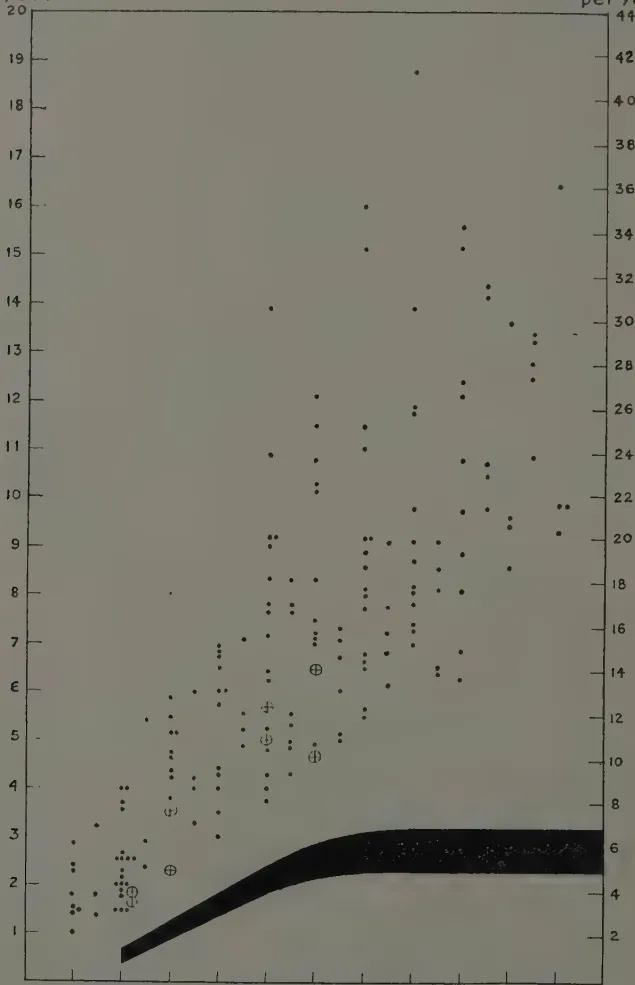
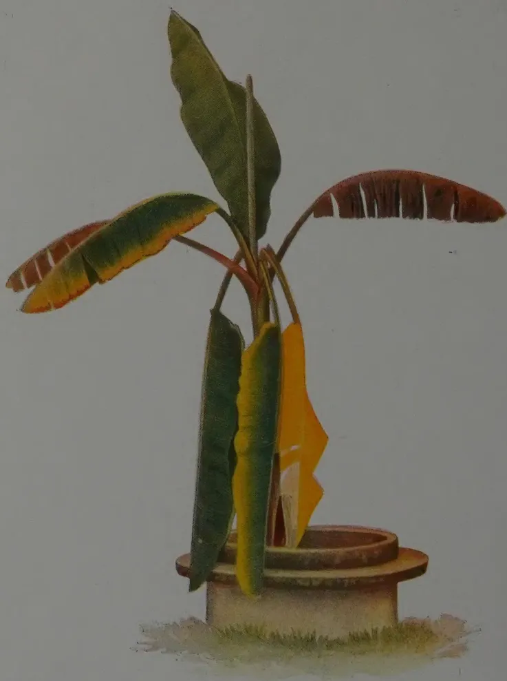

October, 1933.
THE need for the improvement and extension of grazing grounds for cattle in Ceylon has long been a topic of comment and has recently received some attention from the Executive Committee of Agriculture.
The search for good pastures is an older problem of the human race than the cultivation of the soil but in Ceylon it is certainly still further from satisfactory solution than even the latter. The possibilities of our coconut estates providing opportunity for cattle grazing have been advocated by at least one of our prominent men but yet it is strange what comparatively little advantage has been taken of the million or so acres amongst us available for the purpose. Coconut estates could be greatly improved, and made also to carry a considerable head of neat stock if attention were given to the provision and maintenance of the most suitable type of herbage that they will grow. This can only be achieved by patient observation and research, but the research is of such a nature that no scientific training is necessary for the attainment of results of far-reaching import. The improvement of our pastures must in many cases go hand in hand with the improvement of the soil, this on coconut estates would also be of the greatest value to the major crop. Some interesting studies on the pastures in Travancore have recently been made there from a chemical aspect. Many of the problems there are the problems of Ceylon. The virgin soil is such that it grows grasses deficient in calcium and phosphorus, essential elements in the production of milk and bone in cattle and whose deficiency is the main cause of the poor cattle, the poor milk,
206and the prevalence of disease that we see around us. The solution therefore is in the improvement of the soil so that it will carry other types of grasses which require and utilise the chemical elements that are also required by cattle.
Grasses can perhaps be discovered and utilised by the practical observer that are more selective of these elements from the soil than others, but the problem of soil improvement is the primary step associated with pasture improvement and ultimately cattle improvement. Nevertheless, the discovery of the most suitable grasses is one toward which every practical cattle keeper should apply himself. The good cattle of Tamankaduwa are certainly associated with the nature of the soil which is manifest by the greater prevalence of chalk liking plants there.
Proper distinction between grazing and stall feeding must be made. One should not be looked upon as supplanting but only supplemental to the other.
Stall feeding of cattle except in the case of milch animals in a few of our larger towns is rarely practised. The making of hay, or the Indian substitute, the gathering of dried grass, are unknown. The provision of any kind of fodder in a system of agriculture has never been considered. Even the rice straw is just as often burnt as fed to the cattle. The inculcation of the provision of fodder would be a great step towards the introduction of a mixed farming system including the more frequent tethering of cattle in stalls, the more permanent fencing of fields, and a greater care of the beasts of draught, burden and milk. It would eventually do away with the necessity for ghastly types of branding and mutilation of otherwise commercially valuable hides. The provision of more communal pasturage is the outcry at present, that however is an almost primitive stage in cattle rearing. Those who are familiar with Lord Ernle's classic "English Farming Past and Present", cannot but contrast his description in what reads like the halcyon days of common pasturage with his final opinion—"There can be no question that, from an agricultural point of view, five acres of pasture, added in individual occupation to the arable holding of a small occupier, and placed near the rest of his land, would have been a greater boon than pasture rights over 250 acres of common". Where coconut plantation exists or could be provided it would fill this condition.
207MALCOLM PARK, A.R.C.S.,
GOVERNMENT MYCOLOGIST
IT is a common experience in Ceylon for a certain number of cacao trees to die suddenly in the wet season. The causes of the deaths of the trees have not always been clear but claret-coloured canker (Phytophthora palmivora) and root diseases have been presumed to be mainly responsible while the rather vaguely-used term 'die-back' has been applied to others. This year the increase in the number of deaths, particularly from May until August, has been somewhat alarming and, in consequence, cacao disease has received the attention of officers of the Department of Agriculture. Numerous estates and village gardens have been visited and, although the investigation is not yet completed, sufficient information has been obtained to justify this preliminary note.
It should be made clear at the outset that, in the opinion of the writer, the increase in the number of casualties in cacao estates and gardens this year has not been due to the incidence of a new disease but rather to a combination of circumstances which have favoured the activity of disease existent in Ceylon for many years. With modern estate practice, the number of deaths caused by root diseases is small and there has been no marked increase this year. Canker (Phytophthora palmivora) has been very common, since the prolonged wet weather has favoured its spread. The number of deaths which can be attributed directly to canker is however, not great and as this disease is well known to all cacao-growers in Ceylon it is not proposed to make here more than a passing reference. The disease which has been found to be the cause in the majority of deaths of trees is separate and distinct from root disease and canker and is discussed below.
The disease is usually first observed through its effect on the foliage. All leaves of the whole or of one or more of the main branches of an apparently healthy tree suddenly show a
208distinct change in colour. The whole of the foliage of the infected tree or part of a tree changes from the normal green colour and assumes an unhealthy pale sage green colour and this change is followed within a period of three to five days by a wilting of the leaves. The leaves dry up and eventually turn brown but remain attached to the branches. About three weeks after the first observed change of colour the foliage is completely dead. Such trees with all the leaves dead and attached to the branches present a striking appearance and can be readily distinguished from surrounding healthy trees. At this stage all the above-ground parts of affected trees are dead although the roots are usually still alive and unaffected. The disease subsequently spreads down to and kills the roots.
The changes in the foliage of diseased trees are preceded and accompanied by changes in the cortex which are not very obvious externally. A little before or at the same time as the first colour change in the leaves, the stems of diseased trees are attacked by small boring beetles (Xyleborus sp.); these beetles are closely allied to the shot-hole borers of tea. The presence of the beetles can be detected by the worm-like casts of wood dust which are extruded from the galleries. If the outer bark is cut away, it can be seen that the cortex below is slightly discoloured and is somewhat more buff or brown than the yellowish or reddish cortex of a healthy tree. The cortex is at this stage still moist, but not excessively so, and has a distinctly fermented smell. It is thought that this fermented smell is that which attracts the borers since, although diseased trees may contain many borers, surrounding healthy trees are not attacked. If the borers were responsible for the disease this discrimination would be inexplicable. This point has been stressed since it has been suggested to the writer by more than one layman that the borers are responsible for the disease.
The first change in colour in the cortex is followed rapidly by a further change and the cortex turns brown and dries so that, by the time the leaves have turned brown, the cortex is also dry and brown. The discoloured cortex is usually situated on the main stem within eight feet of the ground. It is not localized as is canker and may extend all round the stem or along one side of it. It spreads rapidly upwards and, by the time the leaves turn brown, the discoloured cortex may extend for six feet or more. The occurrence of fungi in the diseased cortex is discussed below. The roots remain healthy until after the symptoms described above have been displayed for some time,
209The disease differs from claret-coloured canker in the rapidity of its action, in the absence of any exudation from diseased tissue and the subsequent external discoloration of the bark, in the extent of the diseased cortex and in the absence of the typical claret-colour which appears in cankered cortex.
In single-stemmed trees the disease usually affects the whole tree, although in trees where low branching has taken place, one main branch only may be affected. In double-stemmed trees, it often happens that one half of the tree is killed while the other half is unaffected. The disease usually affects old trees but not invariably. Diseased trees occur singly and not in groups. There has been no indication that either healthy or ill-nourished trees are most susceptible, nor has any variety been found to be resistant to the disease. In one estate in the Dumbara Valley containing about 300 acres of cacao it is reported that 2,000 dead trees were cut out during the three months from June to August, 1933. Of these a large proportion was killed by the disease under discussion.
The disease is attributed by some experienced planters directly to the unusually wet weather. Figures obtained from two estates have indicated that the rainfall has been exceptional during the past year. In one, the rainfall for the year ending 30th June, 1933, was 110.6 inches as against an average annual rainfall of 72 inches, while in the other, the rainfall for the year ending 31st July, 1933, was 115.6 inches as against an average of 86 inches: at Peradeniya, where the disease has also occurred, the rainfall for the same period was 110 inches as against an average of 89 inches, the increase occurring since January, 1933.
An observation which may be significant may be made here. During May, 1933, severe floods occurred and areas of cacao not usually subject to flooding were submerged for one or two days. In such areas in Peradeniya the trees subsequently died and displayed symptoms very similar to those under discussion. The leaves became discoloured and wilted and at the time of examination the cortex of both stems and roots was markedly discoloured. Borers had attacked the stems of these trees. Water-logged conditions are, however, not necessary for the incidence of the disease. Diseased trees have been observed on well-drained soils and on the sides of hills. Isolated trees are affected by the disease and this fact indicates although flooding may cause the exhibition of similar symptoms, some other cause of the disease must be sought.
210Attempts have been made to determine if the occurrence of the disease has been more serious in the past in wet years than in dry years. The only figures that are available are those of the total number of dead trees uprooted on certain estates. Although the figures are not definite, there appears to have been some correlation between the rainfall, especially in the first half of the year, and the number of uprooted trees. Looking back through the official records, it is obvious that more interest has been taken in disease in cacao during wet years, e.g. 1913 and 1923, than in others and from this it may be inferred that cacao disease was more prevalent in those years than in others. Such evidence is unsatisfactory and it would appear that no reliable data from the past are available. The disease does not appear to be caused directly by any soil condition. Its occurrence, wide-spread throughout the main cacao growing areas of Ceylon, on individuals rather than on groups of trees tends to indicate that it is not a highly infectious disease. The nature of the disease does, however, suggest that a parasitic organism may be the cause and experiments are in progress to determine if this is so. The disease is a stem disease and numerous isolations have been made from diseased cortex.
In the early stages of the disease, when the first attack by borers indicates that some change has taken place in the cortex, there is no sign of a parasitic organism. When discoloration extends and the cortex dies fungi have been observed in the tissues. Nectria striatospora is found on the dead bark of all diseased trees. The fungi appears first as white or pink pustules a little larger than a pin's head which burst through small ruptures in the bark. Later the perfect stage of the fungus develops as clusters of crimson fruit bodies. The fruit clusters are small and rarely exceed 0.1 inch in diameter. Nectria striatospora was considered to be the cause of claret-coloured canker by Carruthers in 1898 but later investigators have disproved this and have concluded that the fungus is saprophytic. It occurs commonly on the bark of dead cacao stems or branches and is not confined to diseased trees.
Within the dead cortex of diseased stems and between the cortex and the wood, strands of mycelium of a fungus occur regularly. The strands are black externally and white internally, roughly cylindrical within the tissues of the cortex but somewhat flattened between the cortex and the wood. They are about 1 mm. in width and branch infrequently. The presence of
211these strands in diseased cacao cortex has been remarked by previous investigators but hitherto no attempt to identify the fungus has been recorded.
Inoculation experiments are in progress to determine if pure cultures of these fungi are capable of causing the disease. It is always possible that, in a season so wet as the current season, fungi which are normally incapable of causing a serious disease may find conditions suitable for their rapid progress as parasites.
Cacao disease has been unusually prevalent in the Dumbara Valley during the months May to August, 1933. While claret-coloured canker has been more severe than usual owing to the very wet season, the majority of the deaths of trees that have occurred are attributed to a form of stem disease which causes the trees to wilt and die rapidly.
The cause of the disease is not known but there is some evidence to show that its severity is correlated with the unusually wet weather experienced this year. The disease is thought to be one that has existed in Ceylon for a long time. Further investigation of the disease is in progress and it is hoped to issue more information when further knowledge has been gained.
212CONTRIBUTIONS FROM THE RUBBER RESEARCH
SCHEME (CEYLON)
PROVED HEVEA CLONES—II
CLONES IN MALAYA AND THE DUTCH
EAST INDIES
R. K. S. MURRAY, A.R.C.S.,
MYCOLOGIST, RUBBER RESEARCH SCHEME (CEYLON)
FOREWORD
THIS report is the second of a series of notes, the object of which is to keep the planter in Ceylon in touch with the performance of the imported clones established in his clearing or nursery. The first of the series was published in this Journal in July 1932 and in Rubber Research Scheme Quarterly Circular Vol. 9, Parts 1 and 2, and the present report extends the information to the latest tapping year. Notes on Ceylon clones are being issued in a separate series.
No attempt has been made to give an inclusive account of all proved clones from Malaya and the Dutch East Indies. Only those believed to be of interest to Ceylon planters are mentioned, and clones which are no longer specially recommended by those in the best position to judge have been omitted. Their omission does not necessarily imply that they have developed any new undesirable characteristics; in many cases they have been superseded as the choice of high-yielding material has become wider. Information regarding clones not yet introduced to Ceylon will be given in subsequent reports should their performance become of outstanding interest.
The results are presented in a somewhat different form to that adopted in last year's report. The yields of the best Malayan clones are given together in Table I, and of those from Java and Sumatra in Table II. The separation of the clones into these two classes has not been done on geographical grounds alone. A comparison of the yields from Malaya with those from the Dutch East Indies is not justified without taking two factors into consideration.
213(1) Growth in Malaya is, in general, more rapid than in Java or Sumatra, so that at any age the young budgrafts are more advanced.
(2) Tapping of the Malayan clones is in all cases on half the circumference, whereas in Java and Sumatra most of the yields are derived from one-third of the circumference.
The yields are expressed in lb. of dry rubber per tree per annum, and in order to make the figures comparable they are calculated on a basis of 160 tappings. (To convert the figures to grams dry rubber per tapping they should be multiplied by 2.84. This will facilitate comparison with the performance of the young Ceylon clones given in R.R.S. Quarterly Circular, Vol. 10, Part 2.) It must be recognised that these are calculated rather than absolute figures, but since the number of tappings in the year has usually approximated to 160 the error introduced is small. The yields are given according to age, calculated to the nearest half year from the date of establishment (budding or planting of budded stumps) to the middle of the tapping year. The tables also give the situation, the year and month of planting or budding, the number of trees under test and the tapping system employed. In the last column the following abbreviations are used:—
a.d. = tapped alternate daily,
d.a.m. = tapped daily in alternate months.
Buddings of the second "vegetative generation" of some of these clones are now in tapping, and the records published to date are given in Table III. Most of the well-known Java and Sumatra clones have been established on an experimental clearing at Tjiomas, Java, and the yields from these young buddings will provide a good comparison of the various clones.
In the publication mentioned above full particulars were given regarding the conditions under which the trees are tapped and the yields recorded, and for this information the reader is referred back. The notes on the characteristics of the individual clones, also, are not repeated, but are supplemented by any new features which may have developed or new information come to hand.
Up to the present all the yield records and most of the other observations are derived from the countries in which the clones originated. It is hoped that from 1934 onwards it will be possible to publish data regarding the performance of these foreign clones in Ceylon.
214In the current issue is reproduced a translation of a lecture given in Java by Ir. J. S. Vollema, in which the most recent information regarding the Java and Sumatra clones is given, and certain aspects of the use of buddings as planting material fully discussed. Attention is particularly directed to the yields obtained from relatively large areas of budgrafts tapped on a commercial scale, and to their close general agreement with the figures recorded from small scale test-tappings. For convenient reference these practical figures have been reproduced in tabular form in Table IV.
These clones are established and tested under careful supervision on Prang Besar Estate, Malaya, a point which is particularly stressed by the Estate being that the trees are tapped under strictly commercial conditions. Yields and other information regarding the best clones are issued annually in pamphlets, from which most of the following information is abstracted.
The six best clones for which yield records for 1932 have been issued are Nos. 23, 25, 86, 180, 183 and 186. Nos. 24 and 123 have been omitted from the list given last year, and No. 180 added.
As shown in Table I the number of trees in test-tapping is in all cases 10. The number of trees in each clone actually under observation is, however, considerably larger, and tests have shown that the average yield from the 10 trees in test-tapping is substantially the same as that from the total number of trees in the clone.
With regard to the yields, it is stated that the crop for 1932 was interfered with by weather to an exceptional degree, and this presumably accounts for the slight decrease in the yield of some of the clones.
The following notes supplement those given last year:
P.B. 23.—Early growth is weak and variable, but from the second year onwards there is a marked increase in vigour and general evening-up in size. The trees are showing satisfactory growth in a poor lateritic soil at Nivitigalakele. The bark is soft and easy to tap. Five cases of Brown Bast have been reported out of 63 trees under observation.
P.B. 25.—Growth is very variable, but has so far been quite good at Nivitigalakele. Yields from buddings of the second "vegetative generation" promise to confirm the high yield of the original trees.
215P.B. 86.—Nothing new to report. This is the youngest of the proved Prang Besar clones, and for its age is second in yield only to P.B. 186.
P.B. 180.—Growth is stated to be good, the crown being particularly large. Bark renewal is moderately good and wound recovery satisfactory. The clone is somewhat late maturing, but has been the second highest yielder during the last two years.
P.B. 183.—Nothing new to report.
P.B. 186.—This clone has been by far the highest yielder among the Prang Besar clones for the last three years. As explained above the decline in 1932 is attributed to bad weather conditions. Growth is vigorous even under poor conditions. The bark is thick but rather hard, and requires careful tapping in early years. Nine trees have developed Brown Bast out of 261 trees under observation.
For information regarding these clones we are indebted to notes published by the Rubber Research Institute of Malaya. The clones have been established at the Rubber Research Scheme Experiment Station, Nivitigalakele.
Sungei Reko 9.—This clone was established on Kajang Estate in October-November 1921, and has been tapped continuously under commercial conditions since 1927. Its yield is not as high as the best Prang Besar clones but is the average of as many as 84 trees. The growth in the first year or two is very vigorous and uniform under all conditions, though the clone is not actually one of the quickest to come into tapping. Clone S.R. 9 seems to possess no serious defects.
Glenshiel 1.—This clone was established in Glenshiel Estate in November to December 1921. The yield records given in Table I are derived from 20 trees, but there are six further groups of 20 trees each tapped on different systems, and, in addition, 180 trees are under observation in normal commercial tapping. The slight decrease in yield during the last two years is accounted for partly by the fact that the 1930 yields were rather high, the trees having benefited from a rest during the last six months of 1929, and partly by the fact that in 1932 the cuts were only a few inches above the union. The opening of a new panel at 40 inches in October 1932 resulted in an immediate increase in yield. The tree is moderately vigorous.
216TABLE I
MALAYAN CLONES
| Clone | Where planted | When budded | No. of trees | Yield in lb. dry rubber per tree per year of 160 tappings at an age of (to nearest half year) | Tapping system | |||||||||||
|---|---|---|---|---|---|---|---|---|---|---|---|---|---|---|---|---|
| 4½ | 5 | 5½ | 6 | 6½ | 7 | 7½ | 8 | 8½ | 9 | 9½ | 10 | 10½ | ||||
| P.B. 23 | Prang Besar | IV. 1922 | 10 | 13.6 | 15.9 | 16.5 | 21.5 | 20.7 | ½ sp.a.d. | |||||||
| P.B. 25 | " | IV. 1922 | 10 | 12.4 | 13.9 | 15.1 | 20.1 | 22.1 | " | |||||||
| P.B. 86 | " | X. 1923 | 10 | 12.3 | 14.9 | 18.5 | 21.1 | " | ||||||||
| P.B. 180 | " | IV. 1922 | 10 | 14.4 | 22.9 | 22.6 | " | |||||||||
| P.B. 183 | " | VI. 1923 | 10 | 8.4 | 12.1 | 13.4 | 20.4 | 20.4 | " | |||||||
| P.B. 186 | " | IV. 1922 | 10 | 13.2 | 15.3 | 20.6 | 27.6 | 26.3 | " | |||||||
| S.R. 9 (Sungei K'ko) |
Kajang | XI. 1921 | 84 | 11.2 | 10.7 | 16.5 | 17.2 | 17.9 | " | |||||||
| Gls. I (Glenshiel) |
Glenshiel | XII. 1921 | 20 | 10.7 | 11.1 | 22.7 | 22.4 | 22.2 | ||||||||
| Rub. 393 (Rubana) |
Rubana | XII. 1921 | 9-8 | 14.9 | 15.0 | 23.3 | 24.2 | 28.7 ½ V. a.d. | ||||||||
| Sab. 24 (Sabrang) |
Sabrang | X. 1921 | 17 | 12.6 | 20.6 | 19.7 | 22.6 | 31.3 | ||||||||
virgin and renewed bark being entirely satisfactory. "Dry" patches have occurred on several cuts on a half-spiral, and this clone appears to respond better to tapping on one-third of the circumference.
Rubana 393.—This clone was established on Rubana Estate in December 1921, and the 9-8 buddings have been tapped continuously since April 1928. The growth is of average vigour with prolific branching and a heavy crown. Virgin bark is of moderate thickness and renewal satisfactory. One case of Brown Bast has occurred, but no other disease has been reported.
Sabrang 24.—This clone was established on Sabrang Estate in October 1921. Twenty trees were originally test-tapped, of which 17 have been tapped continuously since April 1928. In 1932 the yield reached the high figure of 31.3 lb. per tree. Growth is fairly vigorous and branching sparse. Virgin bark and renewal are excellent. No case of Brown Bast or other disease has been reported, but two trees have gone dry and one was damaged in a storm.
The buddings of the A.V.R.O.S. clones are planted on various estates and experimental gardens in Sumatra, the test-tapping being under the general supervision of the A.V.R.O.S. Proefstation. Some of the clones have been test-tapped on more than one estate, and the records from the various situations are given in Table II. A comparison of the relative merits of two clones is clearly of greater value if based on the average results from various localities, than if it is merely a comparison of one clone on one estate with the other clone on a different estate.
The clones specially recommended by the A.V.R.O.S. Proefstation are Nos. 49, 50, 152 and 256, and only these clones are included in Table II. These are the same clones to which preference was given in last year's report, and the manner in which the older clones have maintained their position is worthy of note. The other older clones have been discarded on account of undesirable characteristics or because their yield has not increased according to expectations. There is also a number of newer clones, the yields of some of which promise to exceed those of the older clones. So far as is known these have not yet been introduced to Ceylon, but data will be given in future reports if their performance becomes outstanding.
218Second generation buddings of Clones 50 and 152 are being test-tapped on an experimental clearing at Tjiomas, Java, and the yield records are given in Table III. In general, the A.V.R.O.S. clones are giving lower yields in Java than those obtained from the original buddings on the East Coast of Sumatra at the same age. This is probably due to the milder system of tapping and the slower growth in Java. In Malaya, on the other hand, where growth is more rapid, the A.V.R.O.S. clones are reported to be giving substantially higher yields than at the same age in Sumatra.
The following notes supplement those given last year:
A.V.R.O.S. 49.—There are no new features to report. The resistance to conditions of drought should make this clone very suitable for relatively dry districts, such as Matale and Uva. The buddings show very uniform and rapid growth on a wide range of soil types, and are resistant to wind damage.
A.V.R.O.S. 50.—This clone is a vigorous grower, but is more susceptible to soil conditions than A.V.R.O.S. 49. It is stated to grow badly where natural grasses have been allowed to remain. The buddings are extremely resistant to wind damage.
A.V.R.O.S. 152.—This clone is very sensitive to soil conditions and the growth is therefore extremely variable, being particularly bad under grass. Like A.V.R.O.S. 49 it is resistant to drought and shows only a slight yield decline during the wintering period. The trees are somewhat susceptible to damage by wind.
A.V.R.O.S. 256.—There is no information to add to the notes given in last year's report. Young buddings in a nursery at the Experiment Station, Nivitigalakele, have shown quicker growth in the first year than any of the other imported clones, but the growth is believed to be somewhat variable. Little damage due to wind has been experienced.
An area of mixed buddings was established on Bodjong Datar Estate, Java, in February 1918, and was first tapped in 1922. The various clones were not, however, identified until 1926, and the test-tapping records date from June of that year. With the exception of a rest for five months in 1927 the trees have been tapped continuously on alternate days on a 1/3 spiral cut.
219TABLE II
JAVA AND SUMATRA CLONES
| Clone | Where planted | When planted | No. of trees | Yield in lbs. dry rubber per tree per year of 160 tappings at an age of (to nearest half year) | Tapping system | ||||||||||||||||||
|---|---|---|---|---|---|---|---|---|---|---|---|---|---|---|---|---|---|---|---|---|---|---|---|
| 4½ | 5 | 5½ | 6 | 6½ | 7 | 7½ | 8 | 8½ | 9 | 9½ | 10 | 10½ | 11 | 11½ | 12 | 12½ | 13 | 13½ | 14 | 14½ | |||
| A.V.R.O.S. 49 | Polonia | VII. 1919 | 4 | 3.7* | 7.2* | 11.5* | 12.6* | 12.2 | 15.2 | 19.4 | 22.7 | ½* & ½ sp. d.a.m | |||||||||||
| " | Tjinta Radja | V. 1920 | 112.89 | 5.1* | 7.5* | 8.9* | 10.8 | 12.3 | 15.8 | " | |||||||||||||
| " | Boekit Maradja | X. 1922 | 25 | 9.8* | 10.0 | 12.8 | " | ||||||||||||||||
| " | Peolee Tagort | I. 1922 | 15 | 7.5* | 8.6 | " | |||||||||||||||||
| A.V.R.O.S. 50 | Belawan | I. 1919 | 10.9 | 5.3* | 11.3* | 12.4* | 10.7 | 10.9 | 14.1 | 16.0 | 13.7 | " | |||||||||||
| A.V.R.O.S. 152 | Boekit Maradja. | X. 1922 | 100 | 6.0* | 8.3 | 11.7 | 14.4 | " | |||||||||||||||
| " | Peolee Tagort | I. 1922 | 20 | 6.2* | 8.2 | " | |||||||||||||||||
| " | Alcer Djamboe | end 1922 | 25 | 9.0 | ½ sp. d.a.m. | ||||||||||||||||||
| A.V.R.O.S. 256 | Tamiang | X. 1920 | 8.20 | 14.7 | 16.3 | 14.7 | 16.6 | ½ sp. d.a.m. | |||||||||||||||
| B.D. 5 | Bedjong Datar | II. 1918 | 8.5 | 17.4 | 25.0 | 24.2 | 27.0 | 27.7 | 33.4 | ½ sp. n. d. | |||||||||||||
| B.D. 10 | " | II. 1918 | 50.44 | 15.7 | 18.7 | 18.7 | 18.0 | 20.1 | 20.1 | " | |||||||||||||
| " | Pasir Waringin | 1918 | 23.20 | (17.8) | (21.3) | (27.5) | " | ||||||||||||||||
| (War. 6) | |||||||||||||||||||||||
| Tjir. I. | Tjirandji | 1920 | 5.2 | 27.0* | 24.0 | 31.6 | 37.0 | 26.7* | ½* & ½ sp. n. d. | ||||||||||||||
| Tjir. VIII. | " | 1920 | 34 | 13.9 | 14.7 | 15.8 | 16.1 | 17.4 | ½ sp. n. d. | ||||||||||||||
| Tjir. XVI. | " | 1920 | 11 | 21.2 | 21.3 | 18.0 | 19.1 | 24.3 | " | ||||||||||||||
| Djas. I. | Djasinga | 1920 | 150.144 | (9.9) | 13.3 | 12.5 | " | ||||||||||||||||
* See under "Tapping system" Figures in brackets are approximate, the number of tappings not being known.
† On replanted land.
220Clones B.D. 2, 5 & 10 attracted early attention, but B.D. 2 developed various undesirable characteristics and has been discarded from planting recommendations. Other Bodjong Datar clones are moderately high yielders but are not of interest to Ceylon planters.
B.D. 5.—The yield of this clone in its fifteenth year attained the high figure of 36 lb. per tree for 173 tappings. This represents a considerable advance on the previous year, and it would appear that the yield is still on the increase. The yield of the second generation buddings on Tjiomas is also satisfactory.
There is often a delay in the shooting of the buds, but early growth is vigorous. The buddings have a very late branching habit, however, and on this account the girth increase is slow. The small crown is probably responsible for the great resistance of this clone to any form of damage by wind. Growth is very uniform and there is evidence to show that B.D. 5 may prove one of the most vigorous clones on replanted land. In the wet districts of Ceylon the clone suffers as the result of being particularly susceptible to attack by Phytophthora palmivora on the young green shoots. Provided this disease can be controlled in the early years the budgrafts subsequently show satisfactory development, but the trouble thus incurred, and the probability that the mature foliage will be susceptible to "secondary leaf-fall", have checked the extensive use of this clone in Ceylon.
B.D. 10.—The yield of this clone is considerably lower than that of B.D. 5, but being derived from 44 trees is a more reliable average figure. The clone is also established on Pasir Waringin Estate under the name Waringiana 6, and here the yield showed a big rise in 1932. The young plants on Tjiomas are also yielding well. Early growth is very vigorous and uniform. An unsatisfactory feature of this clone is the tendency to form a twisted or corrugated stem, but this is stated not to interfere with tapping. Out of 68 trees, 8 have been affected with Brown Bast.
The Tjirandji clones were planted on Tjirandji Estate, Java, in 1920, and are test-tapped under the supervision of the Proefstation, West Java. Clone Tjir. I has probably been more extensively planted in Ceylon than any other clone.
221Tjir. I.—The yield of the two original buddings, although very high, has shown a marked decrease in 1932, despite the cut having been changed from 1/4 to 1/3 circumference. Such fluctuations, however, are to be expected when the average is derived from only two trees. On account of this small number of trees (three out of the original five buddings were destroyed by a storm in 1929) the exceptionally high figures have been accepted with a certain reserve. It is now fortunately possible to give yield records from a relatively large number of second generation buddings (see Table III), and their good performance in several clearings has materially increased one's confidence in this clone.
TABLE III
SECOND GENERATION BUDDINGS
| Clone | Where planted | When planted or budded | No. of trees | Yield in lb. dry rubber per tree per annum at age of (years) | Tapping system | ||
|---|---|---|---|---|---|---|---|
| 4½ | 5 | 5½ | |||||
| P.B. 24 | Prang Besar | XI. 1927 | 142 | 6.1* | ½ sp.a.d. | ||
| P.B. 25 | " | XI. 1927 | 139 | 6.0* | " | ||
| A.V.R.O.S. 50 | Tjiomas (Java) | IV. 1926 | 1-13 | 3.3 | 3.3 | ½ sp.a.d. | |
| A.V.R.O.S. 152 | " | IV. 1926 | 2-3 | 3.5 | 4.4 | " | |
| B.D. 5 | " | I. 1927 | 5-10 | 5.3 | " | ||
| B.D. 10 | " | I. 1927 | 12-14 | 4.4 | " | ||
| Tjir. I | Tjirandji | 1927 | 24-33 | 4.6 | " | ||
| " | Tjimatis | 1927 | 110-219 | 5.3 | " | ||
| " | " | 1928 | 153-265 | 3.5 | " | ||
| " | Tjiomas | I. 1927 | 10-15 | 5.5 | " | ||
| Djas. I | " | IV. 1926 | 3 | 3.3 | " | ||
* Calculated from three months' tapping.
The trees show very vigorous growth, being uniform under most conditions. The clone possesses three defects, one or all of which may be of importance in certain districts and situations:
Tjir. VIII.—The yield of this clone, though, showing a steady annual increase, is only moderate, and in Java the clone is only recommended for mixed planting. So far as is known it possesses no serious defects.
Tjir. XVI.—The yield in the thirteenth year has shown a big increase. Growth is slow, but primary and secondary bark are very good. There is no record of susceptibility to disease or wind damage.
222CLONE DJASINGA IThis clone was established on Djasinga Estate in 1920, being one of the few original clones planted unmixed with other buddings. The yield is only moderate but the average is derived from as many as 144 trees. The slight decrease in yield in the twelfth year is attributed to root disturbance consequent on the removal of interplanted seedlings. The clone is now only recommended for mixed planting, but the records are given in this report as it has been fairly extensively established in Ceylon. A feature of Djas. I is the small crown which permits close planting.
COMMERCIAL TAPPING OF BUDDED AREASThe question most frequently asked by the practical planter regarding the yield of budgrafts is: "Are the yields obtained by the test-tapping of a small number of trees going to be reproduced when large budded areas are tapped on a commercial scale?" This matter will not be discussed in detail here as it is fully dealt with in the translation of a Dutch paper reproduced in the current issue. Suffice it to say that the yields so far recorded give every indication of following the same trend as those obtained in the test-tappings.
The practical figures published to date are summarised in Table IV: other records of a similar nature are known but are not available for publication. When considering these figures, which at first sight may seem disappointing, it must be borne in mind that many of the clones which comprise these plantings have since been discarded, and that the tapping systems are mostly milder than are employed in Ceylon. Results of greater significance will be obtained when unmixed clearings of what are now regarded as the best clones come into commercial tapping.
TABLE IV
PRACTICAL YIELD FIGURES FROM BUDDED AREAS
| Clones | Situation | Acreage in tapping |
Year | Age (years) |
lb. rubber per acre |
Tapping system |
|---|---|---|---|---|---|---|
| Untested H.A.P.M. | H.A.P.M. | 200 | 1929 | 9-10 | 1,000 | sp. d.a.m. |
| " | E.C. Sumatra. | |||||
| " | " | 5 | 1928 | 8-9 | 1,104 | " |
| " | " | 1929 | 9-10 | 1,452 | " | |
| B.D. 2, 5, 10 (proportions 3:1:5) |
Bodjong Datar Java. |
55 | - | 5-6 | 404 | sp.d. 15 days rest 30 days. |
| 215 ac. A.V.R.O.S. 36 | ||||||
| 52 ac. A.V.R.O.S. 36, 49, 50, 52, 80, 152, 163. |
Aloer Djamhoe, E.C. Sumatra. |
267 | 1929 | 5-6 | 337 | sp. d.a.m. |
| A.V.R.O.S. 36 | " | 121 | 1930 | 6-7 | 543 | " |
| A.V.R.O.S. 38, 49, 50, 52, 80, 152. |
Batang Trap, E.C. Sumatra. |
42 | 1930 | 6-7 | 427 | " |
| Mixed. | Java | - | - | 8-9 | 1,361 | .. |
IR. J. S. VOLLEMA
The collected data regarding buddings and clones increases in extent from year to year, and our views regarding this question, which is of such importance to Hevea cultivation, are thus continually changing. A periodical review of the progress made and of the existing position, giving a critical analysis of the available information, is very necessary, and for various reasons the present seems a favourable time for such a review to be made.
In the first place our oldest budding gardens have now completed their fifteenth year of life, and have thereby—according to general belief—tided over the critical age.
Secondly, we are now beginning to derive the benefit of the systematic scientific work on Hevea selection that has been carried out in Java since 1926, in which connection the names of O. de Vries, Ostendorf, Vrolijk, Schweizer and s'Jacob must be mentioned. Thanks to this work a critical revision of clones on the basis of exact comparisons can now be commenced.
Thirdly, the time is opportune because we are now obtaining data with regard to commercial tapping of relatively large areas of budgrafts.
It is my aim today to regard the question entirely from the practical point of view, theoretical considerations being dispensed with as far as possible.
Giving a very brief judgment on the present position regarding buddings we may say that this form of planting material, taken on the whole, has proved quite satisfactory.
In these times of rapid progress it is well to recollect that about five years ago the practical planter was still very suspicious regarding the use of buddings as planting material. It was
[* Lecture by Ir. J. S. Vollema (Translated from the Dutch text in De Bergcultures VII, 15, 1933 on behalf of the Rubber Research Scheme, Ceylon) at the General Meeting of the Soekaboemi Rubber Planters' Association on the 25th March, 1933, at Soekaboemi.]
224feared that buddings, being "artificial products", would be much weaker and more susceptible to diseases than seedlings, that the union would be a point of weakness, and that the bark renewal would be so bad that yields on renewed bark would show a considerable decrease. I once even heard budding characterised as "violation of nature". These pessimistic expectations, however, which many people even yet nurse in their hearts, have not withstood the test of proof.
The budgraft, as an "artificial product", is not on the whole weaker or more susceptible to disease than the seedling. The union is by no means a point of weakness in the tree; indeed the opposite is the case, for after lignification the union is really an exceptionally strong portion of the stem.
Bark renewal of buddings is not, in general, inferior to that of seedlings. I have just spoken of the critical age of buddings. By that I mean the age at which tapping is undertaken on renewed bark, as has been the case for some time with our oldest clones. With our Java clones, amongst others, there is no evidence of a consequent decline in yield; on the contrary the yields, as a general rule, seem to increase, as I shall show you presently. We have lately learned from a reliable source that the same fact has been observed on the East Coast of Sumatra; when the regenerated bark was tapped there was clearly an increased yield. Further reports are yet lacking, but we are in a position to state that the former fears of greatly decreased yields on tapping renewed bark are entirely disproved by these facts.
We can therefore say that the experience with buddings up to, and including, the fifteenth year has been satisfactory. To counteract the disappointing behaviour of some clones we have others which have exceeded expectations. On the whole the tentatively selected clones have done well. It is necessary to emphasise this fact in that it forms the gist of our practical advice of which I am now going to speak. Mr. Ostendorf communicated this advice fully at a Meeting held at Palaboean Ratoe in May 1931, and I will therefore merely remind you of it in brief.
As you know, the Experiment Stations have in the course of years selected a number of clones from among hundreds under observation, and have recommended them for planting out on a practical scale. This selection has been made on the basis of all collected data available over a given period, yield, of course, being given first consideration. But yield alone is not such an absolute criterion as has often been thought. The budding
225gardens that are under observation are located under such varying conditions as regards climate, height above sea level, soil, planting distance etc., that the yields are not directly comparable; in addition all clones are not tapped on the same system. In collating the yields all these factors have to be taken into consideration. Within the groups of clones planted together a selection on the basis of production was less risky, but even in such cases we had to be careful that another factor was not concerned, namely the number of trees under observation per clone. Here I must pause to say something in this connection. The number of trees under observation per clone is of importance, not only because the reliability of the average yield per budding naturally increases with a larger number of trees, but also because, as I shall show you, a close connection exists between the number of trees under observation and the amount produced. We have usually observed, especially among the Java clones, that the production is higher as the number of trees is smaller. This is easily explained by the manner in which the buddings of most of the Java clones, which were originally planted mixed up together, were identified. Special attention was first paid to the high-yielding trees, and these were grouped into clones on the basis of seed or growth habit. Subsequently the clones were extended by the inclusion of trees which were identified purely by seed and habit. The disclosure of all the buddings in a clone has only been achieved in exceptional cases. It is therefore easily understood that the smaller the number of trees identified in a clone, the greater is the chance that only the highest-yielding trees have been found.
In comparing the production figures of different clones, therefore, one must take into consideration the number of trees per clone.
It is hardly necessary to point out that the value of a clone is determined not only by its capacity for production. There are many other characteristics that play an important part in testing clones, e.g. bark renewal, susceptibility to diseases, rate of growth, susceptibility to wind damage, and quality of the rubber. At this factor of "susceptibility to wind damage" I must pause for a moment. The impression has been gained that buddings are more susceptible to wind damage than are seedlings. Is this due to the wood of buddings being as a rule weaker than that of seedlings? Probably no. The cause apparently lies in the fact that buddings as a general rule form
226larger crowns than seedlings and therefore catch more wind. One should therefore aim at the restriction of crowns and mutual support, this being most easily attained by a fairly narrow planting distance—an additional argument for close planting.
Even as the yield is influenced, so also are the qualities of "bark renewal", "susceptibility to diseases", "susceptibility to wind damage", and "rate of growth", which are referred to above, influenced to a considerable extent by height above sea level, climate, soil conditions, planting distance, etc. It will be clear to you that in testing the clones situated under such varying conditions it was impossible to evaluate all the above-named factors and precisely to balance the "pros and cons". This was all the more so as we could not be sure that some favourable or unfavourable errors or omissions had not been introduced. Such an objective selection would only have been possible on the basis of exact data from methodically laid out experimental gardens, wherein the clones, grown under similar environmental conditions, were compared on strictly systematic lines. Such exact information, however, has only been available very recently. A choice, nevertheless, had to be made years ago as the practical planter—quite rightly—had no intention of awaiting the exact data, but wished to plant out buddings and wanted advice about clones.
The Experiment Stations have therefore had to be satisfied with a subjective selection involving in its very nature a speculative element. A risk was involved in the planting of each tentatively selected clone. Nobody could predict what any clone tested under a certain combination of external circumstances would do under a different set of conditions: each individual clone might be better or worse in another locality. Distribution of the risk was therefore necessary, and we accordingly recommended that not one or a few but a considerable number of clones be planted with a view to assuring a good result from the average. This has been the fundamental basis of our advice and has remained unchanged up to the present day, although the form in which the advice was given has undergone some modification in the course of years as the result of knowledge gained from further data.
To be brief, I shall quote only our most recent advice. Expressed in popular terms it reads as follows:
227“Do not restrict yourself to certain few clones but plant out at least ten. For planting on a large scale use only the best known clones viz: A.V.R.O.S. 49, 50, 71, 152, 256, B.D. 5 and 10, Tjir. I and XVI, and War. 1 and 4. These clones may be planted either mixed (polyclone) or pure (monoclon). If you plant polyclone then a number of less known but promising clones may also be established on a small scale, e.g. A.V.R.O.S. 150, 185, 214, Djas. I, Lampongiana 1 and 2, and Tjir. VIII. Do not plant these last named on the monoclon system”.
We must be more precise as to the meaning of planting “on a large scale” and “on a small scale”. Every individual will interpret these terms differently, and we will therefore define what the Experiment Station means by them. By “planting on a large scale” we mean ten per cent. of the area. If 100 hectares (247 acres) have been opened plant about ten hectares with each of the best known clones, either in blocks (monoclon) or mixed (polyclone). By “planting on a small scale” we mean at the most five per cent. of the area i.e. five hectares in a total clearing of 100 hectares.
So much has already been written regarding the advantages and disadvantages of mono- and polyclone planting that I must not say much more on the subject. We consider that the clones recommended for planting on a large scale have gradually become so well known that there is no objection to establishing them in monoclon. Theoretically, polyclone planting leads to higher average yields over the whole area than monoclon, but we are aware that the advantages of the latter system are often preferred by the practical planter.
As regards the clones recommended for planting on a small scale, the risk in monoclon planting is still considered too great. The well known instance of the areas planted with AV. 36, which on some estates in Sumatra were almost entirely destroyed by wind, is a warning example in this connection.
The advice so far given should be regarded as of a general nature. In special cases deviation to a greater or less extent may be justified. For instance, on the estates on which the above-mentioned clones were tested (and on neighbouring estates where similar conditions prevail), the risk of planting the locally tested clones is naturally much smaller than elsewhere. These estates can restrict themselves to their own clones. There may be many other similar exceptions, but as a general rule we adhere to our recommendations. At the present time we see
228no reason for modifying this advice, though this may become necessary as the results from the systematic test-stations become available. As these test-stations are spread over the whole of Java it is also possible that we will be able to give recommendations to suit local conditions. Up to the present we have not reached this stage; yield figures are only available from the Experimental Station, Tjiomas,* at Buitenzorg, so that we have only been able to verify our general advice for the conditions prevailing at Buitenzorg. No alteration has been made in the selection of clones recommended for planting on a large scale, but the group recommended for planting on a small scale has been somewhat extended in the light of recent data.
I have collected in tabular form the most important data of the two groups of clones, and I will go over the figures with you now. We will then be able to review the various clones yet again, and discuss for each clone the most recently developed characteristics.
Table I contains the data regarding the clones recommended for planting on a large scale, and Table II those recommended for planting on a small scale.
The tables are arranged as follows:
In the first column are the names of the clones and, as you will see, they are arranged in alphabetical order. This is done on purpose in order to avoid giving the impression that within the two main groups a well founded selection is possible. There is an understandable tendency to place the clones within the group in an order of merit based only on yield figures, and to speak of the "very best clones" etc. It should be clear to you that in view of the tentative nature of the testing, on which I have laid stress, such an arrangement, unless confirmed by satisfactory data from systematic test-stations, is of no significance. In the second column of the tables is given the situation, in the third the year of planting, and in the fourth the number of trees under observation. Then follow eleven columns in which the yield in kg. (here converted to lb.) per tree per year in the consecutive tapping years is shown. As a rule the tapping years do not coincide with the years of the trees' life, and the differences are rounded
* Viz. the test clearings of April, 1926 and January, 1927 with 23 and 44 clones respectively. The average clone production in the fifth year of age in the 1926 clearing was 1.3 kg. (2.9 lb.) per tree; the average yield in the sixth year in both clearings was 1.6 kg. (3.5 lb.) per tree.
229TABLE I
CLONES FOR PLANTING ON A LARGE SCALE
| Clone | Where planted | Year of planting | No. of trees | Yield in lb. dry rubber per tree at an average age (to nearest half year) of | Tapping system | |||||||||
|---|---|---|---|---|---|---|---|---|---|---|---|---|---|---|
| 4½ | 5½ | 6½ | 7 | 8½ | 9½ | 10½ | 11½ | 12½ | 13½ | 14½ | ||||
| AV 49 | Polonia | 1919 | 4 | 3.1 | 6.4 | 9.2 | 11.4 | 10.6 | 13.2 | 17.2 | ½ and ¾ d.a.m. | |||
| " | Tjinta Radja | 1920 | 89 | 8.6 | 10.8 | 11.7 | 15.0 | do. | ||||||
| " | B. Maradja | 1922 | 25 | 8.8 | 10.3 | 14.3 | do. | |||||||
| " | P. Tagor | 1922 | 15 | 7.7 | 8.8 | do. | ||||||||
| " | Betinga | 1923 | 10 | 8.4 | do. | |||||||||
| AV 50 | Belawan Est. | 1919 | 9 | 2.2 | 4.8 | 11.2 | 12.5 | 10.6 | 10.8 | 14.5 | 16.5 | ½ a.d. | ||
| " | TJIOMAS | 1926 | 1.13 | 3.3 | 3.3 | ½ and ¾ d.a.m. | ||||||||
| AV 71 | B. Maradja | 1922 | 100 | 4.8 | 7.7 | 11.2 | 13.2 | do. | ||||||
| " | Al. Djamboe | 1921 | 25 | 13.9 | do. | |||||||||
| " | Betinga | 1923 | 10 | 10.1 | do. | |||||||||
| AV 152 | B. Maradja | 1922 | 100 | 6.4 | 8.1 | 12.1 | 15.0 | do. | ||||||
| " | P. Tagor | 1922 | 20 | 6.6 | 8.4 | do. | ||||||||
| " | Al. Djamboe | 1922 | 25 | 9.2 | do. | |||||||||
| " | Betinga | 1923 | 10 | 9.7 | do. | |||||||||
| " | TJIOMAS | 1926 | 2.3 | 3.5 | 4.4 | ½ a.d. | ||||||||
| AV 256 | Tamiang Est. | 1920 | 20 | 14.7 | 17.2 | 15.6 | ½ d.a.m. | |||||||
| BD 5 | B. Datar | 1918 | 7.6 | 18.5 | 25.3 | 26.0 | 26.6 | 29.9 | ¾ a.d. | |||||
| " | TJIOMAS | 1927 | 5.10 | 5.3 | do. | |||||||||
| BD 10 | B. Datar | 1918 | 50.44 | 16.7 | 18.9 | 20.0 | 17.8 | 21.1 | do. | |||||
| " | Ps. Waringin | 1918 | 23.20 | 17.8 | 21.3 | do. | ||||||||
| (War 6) | ||||||||||||||
| BD 10 | TJIOMAS | 1927 | 12.14 | 4.4 | do. | |||||||||
| Tjir. 1 | Tjirandji | 1920 | 5.2 | ½ and ¾ a.d. | ||||||||||
| " | " | 1927 | 24.33 | 4.6 | ½ a.d. | |||||||||
| " | Tjimatis | 1927 | 110.219 | 5.3 | do. | |||||||||
| " | " | 1928 | 153.265 | 8.5 | do. | |||||||||
| " | TJIOMAS | 1927 | 10.15 | 5.5 | do. | |||||||||
| Tjir. XVI | Tjirandji | 1920 | 11 | 24.0 | 23.8 | 20.2 | 21.3 | 27.5 | do. | |||||
| War. 1 | Madjau | 1918 | 13 | 16.1 | 20.0 | 31.2 | 29.3 | d. | ||||||
| War. 4 | Ps. Waringin | 1918 | 50.27 | dc. | ||||||||||
| " | TJIOMAS | 1927 | 11.14 | 4.2 | 20.2 | 31.7 | dc. | |||||||
off to the nearest half year. We have calculated the yields in kg. (here converted to lb.) per tree, not in kg. per hectare, in order to avoid giving the impression that it would be permissible to reckon in kg. per ha. the yields derived often from only a few trees. In the 16th and last column is given the tapping system employed.
On turning again to the first table we see in the first place that five A.V.R.O.S. clones have been recommended by the A.V.R.O.S. Experiment Station for planting on a large scale. These, the five AV. clones appearing in the table, are clones 49, 50, 71, 152, 256. Since the A.V.R.O.S. Experiment Station is in the best position to judge their own clones we have adopted their advice. In this connection I must remark that Clone 71 has no longer been recommended by the A.V.R.O.S. Station in recent years. This, however, is not because the clone should be rejected, but only because it has been found desirable to reduce the number of AV. clones. As we see no reason to follow this advice we still recommend this clone which has already become fairly widely established; many estates have obtained cheap planting material from which they can plant out.
The yield figures of the AV. clones on the East Coast of Sumatra which appear in the table have already been published by Heusser and do not therefore give rise to much comment.
Clones 49, 71 and 152 are situated in budded clearings on several estates in E.C. Sumatra. The fact that yields of one and the same clone may vary considerably even within the territory of E.C. Sumatra is a strong argument in favour of distributing the risks.
As you can see there are also yield figures available from Clones 50 and 152 in the fifth and sixth years of life at the Experiment Station, Tjiomas. These yields, with one exception, are lower than those from E.C. Sumatra. In the first tapping years the yields of buddings recorded from Sumatra have usually been higher than those in Java. Two reasons for this can be given. In the first place the buddings generally grow faster in E.C. Sumatra than in Java and therefore can be taken into tapping earlier, and in the second place the clones have been tapped more heavily during the first tapping years in Sumatra, viz. half the circumference daily in alternate months as compared with one-third of the circumference on alternate days in Java. In the meantime we may say that the yields of AV. 50 and 152 at the
231Experiment Station, Tjiomas, are moderately good, so that for the present there is no need to depart from our recommendation of these clones.
Next on the list is Clone B.D. 5. The yield records of this clone up to, and including, the fourteenth year of life have already been published. You will see that in the fifteenth year the yield has again risen considerably. On Tjiomas the yield of B.D. 5 in the sixth year is also good.
There have recently been unfavourable reports regarding the quality of the rubber from Clone B.D. 5, and it is desirable here to give a word of assurance on the subject. The reports originate from an investigation made in London, where the results tended to show certain unfavourable characteristics. This investigation, however, is perhaps open to criticism, and in conjunction with the Experiment Station an extensive investigation has accordingly been undertaken, this time in America, the results of which are not yet known.
In anticipation of this extensive investigation, which will be published with all technical details, we can already make the following statements: If it should appear that the unsatisfactory property (referred to above) of the rubber of Clone B.D. 5 really exists, even then it is not serious, for this prejudicial character can probably be quite simply corrected in practice. For the present, therefore, we see no reason for revoking our favourable report on Clone B.D. 5.
Clone B.D. 10 has again shown a slight increase in yield in its fifteenth year; it gave nearly 10 kg. (22 lb.) per tree, which, for an average of 44 trees, is not bad. The same clone is also established on Pasir Waringin under the name of Waringiana 6, and there also the yields are good. On Tjiomas, too, the yield of B.D. 10 for the sixth year is above the average. A somewhat unsatisfactory feature of this clone is the tendency to form a more or less twisted stem which naturally renders tapping somewhat difficult. We do not, however, consider this defect to be of such importance that we should withdraw our recommendation regarding this clone.
Next we come to Clone Tjir. I. The recently published yield of this clone for its thirteenth year, although itself very high, has fallen considerably as compared with the twelfth year of its life. There is no entirely satisfactory explanation for this. On account of the small number of trees one would naturally not
232expect the variations in individual production to be levelled out, and on account of this the estimation of the value of the clone is uncertain. Fortunately figures from young buddings of Tjir. I are now available. On Tjirandji Estate itself there is a small planting of this clone that originated by keeping spare plants in a budded clearing at certain distances. The average yield of these buddings, which certainly have not grown under ideal conditions, was 2.1 kg. (4.6 lb.) per tree in the sixth year; this is considered very satisfactory.
Of still greater value are the observations on Tjimatis where some hundreds of young seedlings, scattered over an area of 28 hectares, were budded with Tjir. I in 1926 and 1927. Very satisfactory yield records are available from a large number of these buddings viz. an average yield per tree of 1.6 kg. (3.5 lb.) in the fifth year, and 2.4 kg. (5.3 lb.) in the sixth year. At the Experiment Station, Tjiomas, also, the yield of this clone for the sixth year has been very good viz. an average of 2.5 kg. (5.5 lb.) per tree. These figures considerably strengthen our confidence in this clone.
At Tjiomas Clone Tjir. I suffered somewhat from wind damage, but in this connection I would remark that the buddings referred to form a border line which receives the full force of the storms that are of frequent occurrence on Tjiomas. The Tjir. I buddings on Tjimatis have also had relatively more windbreaks, resulting from gusts of wind, than the neighbouring seedlings. When considering this clone one must take into account a certain degree of susceptibility to wind damage, against which protective measures can be adopted. Restriction of crown development and the encouragement of mutual support by a well judged planting density will usually reduce wind damage to a great extent. On stretches of land which are quite open and exposed to storms it would be preferable not to plant Tjir. I in monoclon.
The yield of Clone Tjir. XVI rose considerably in the thirteenth year. Moreover this clone gives the impression of being robust.
Then follow the two Waringiana Clones 1 and 4, which have both shown a decrease in yield during the last tapping year. Our faith in these clones, however, has not been greatly shaken. On Tjiomas the yield of Clone War. 4 in its sixth year was above the average.
We now come to Table II which I will deal with more briefly.
233
TABLE II
CLONES FOR PLANTING ON A SMALL SCALE
| Clone | Where planted | Year of planting | No. of trees | Yield in lb. dry rubber per tree at an average age (to nearest half year) of | Tapping system ½ and ¾ d.a.m |
|||||||||||||
|---|---|---|---|---|---|---|---|---|---|---|---|---|---|---|---|---|---|---|
| 4½ | 5½ | 6½ | 7½ | 8½ | 9½ | 10½ | 11½ | 12½ | 13½ | 14½ | ||||||||
| AV 150 | P. Tagor | 1922 | 6 | 9.5 | 9.7 | do. | ||||||||||||
| " | Al. Djamboe | 1922 | 25 | 8.8 | do. | |||||||||||||
| AV 185 | S. Panjoer | 1922 | 4 | 7.0 | 11.7 | 18.2 | 15.6 | do. | ||||||||||
| AV 214 | " A. | 1924 | 12 | 5.1 | 8.8 | 13.0 | do. | |||||||||||
| " | B. | 1923 | 12 | 5.3 | 9.2 | do. | ||||||||||||
| BD 16 | B. Datar | 1918 | 15-14 | 12.1 | 12.5 | 16.3 | 15.2 | 20.7 | 21.8 | ¾ a.d. | ||||||||
| " | TJIOMAS | 1927 | 10-12 | 4.0 | do. | |||||||||||||
| BD 17 | B. Datar | 1918 | 24-23 | 10.8 | 12.3 | 15.4 | 13.9 | 18.9 | 20.7 | do. | ||||||||
| " | TJIOMAS | 1927 | 13-15 | 4.4 | do. | |||||||||||||
| BR 1 | Cult. tuin | 1924-25 | 63 | 4.0 | 5.1 | 7.5 | 12.3 | 17.2 | do. | |||||||||
| " | TJIOMAS | 1926 | 38 | 5.3 | do. | |||||||||||||
| Djas. 1 | Djasinga | 1920 | 150-144 | 4.0 | 9.7 | 11.0 | 15.0 | 14.3 | do. | |||||||||
| " | TJIOMAS | 1926 | 3 | .33 | do. | |||||||||||||
| G.T. 1 | Gondang Tapen | 1922 | 68 | 11.4 | 14.1 | 17.8 | do. | |||||||||||
| Lamp. 1 | T. Kemala | 1921 | 25 | 14.3 | 22.9 | 24.2 | 17.8 | do. | ||||||||||
| " | " | 1922 | 92 | 13.2 | 19.8 | 18.5 | 15.0 | do. | ||||||||||
| Lamp. 2 | Cult. tuin | 1920 | 6-5 | 14.7 | 17.4 | 23.8 | do. | |||||||||||
| " | T. Kemala | 1921 | 6 | 20.2 | 25.3 | 33.4 | 30.6 | do. | ||||||||||
| " | " | 1922 | 15 | 15.9 | 18.5 | 22.2 | 21.3 | do. | ||||||||||
| Pt. 2 | Tjirandji | 1920 | 6-4 | 20.2 | 15.8 | 19.6 | 25.7 | 34.3 | do. | |||||||||
| " | " | 1920 | 7 | 16.7 | 15.4 | 17.2 | 19.4 | 21.3 | do. | |||||||||
| Tjir. VIII | " | 1920 | 84-35 | 15.8 | 16.3 | 17.6 | 18.0 | 19.6 | do. | |||||||||
| War. 3 | Madjou | 1918 | 57-56 | 15.6 | 15.8 | 18.9 | 23.5 | 29.8 | do. | |||||||||
| War. 8 | " | 1918 | 21-18 | 11.2 | 13.6 | 14.1 | 22.9 | 29.0 | do. | |||||||||
| " | TJIOMAS | 1927 | 4-12 | 3.3 | do. | |||||||||||||
In the first place you will see the A.V.R.O.S. Clones 150, 185, and 214, which are regarded as promising clones by the A.V.R.O.S. Experiment Station.
Then follow Clones B.D. 16 and 17 as new-comers to this group. In their fifteenth year these clones produced about the same as B.D. 10. In addition, on Tjiomas their yield in the sixth year was above the average. We therefore believe that these clones are fairly high yielders and can be recommended for planting on a small scale.
The same is the case with B.R.1 which, with 63 trees, has given a good yield at the Cultuurtuin at Buitenzorg, and also shows good figures at Tjiomas for the fifth and sixth years.
We now come to Clone Djas. I which occupies a unique position among our older clones in that the buddings, being planted out unmixed, could all be subsequently identified. Moreover, on account of the large number of trees under observation the average figure is very reliable. The yield has not, however, increased in the last tapping year on Djasinga, and in the sixth year on Tjiomas the yield was at about the average level. These are the only reasons for which this clone is still included amongst those recommended on a small scale.
The next clone, Gondang Tapen I, is also a new-comer concerning which the Experiment Station for Middle and East Java has recently given some information. The average yield of 68 trees is very promising.
The Clones Lampongiana 1 and 2 have given a smaller yield in the last tapping year, but in this case the decrease is easily explained. In the tapping year before last the clones were mostly tapped very deep, but in the last year a normal depth was reverted to. In the Cultuurtuin at Buitenzorg there are also six buddings of Lamp. I and the good yield of these trees tends to confirm our faith in the clone. Clone Lamp. 2 has a somewhat sensitive bark.
The next two clones, Planterstrots 2 and 3, are also new, and they are the highest yielders in the Planterstrots group of clones. The yield of Planterstrots 2 shows a very considerable rise in the thirteenth year but with this clone there is a susceptibility to Brown Bast.
Clone Tjir. VIII shows a regularly increasing yield which has been continued in the thirteenth year.
This image is a scan of a blank page. The paper has a light beige or cream-colored tint. There are a few very small, dark specks scattered across the surface, which appear to be scanning artifacts or dust particles. No text, lines, or other markings are present on the page.Kg.
per tree
per year
lbs.
pertree
per year

The figure is a scatter plot showing the relationship between tree age and annual growth. The x-axis represents 'AGE IN YEARS' from 4 1/2 to 14 1/2. The left y-axis represents 'Kg. per tree per year' from 1 to 20. The right y-axis represents 'lbs. pertree per year' from 2 to 44. Data points are represented by small black dots. A shaded region at the bottom of the plot indicates a lower bound for growth, starting at approximately 0.5 kg at age 5 1/2 and rising to about 2.2 kg by age 10 1/2, where it levels off. Several data points are highlighted with circles containing a cross symbol (⊕), located at approximately (5 1/2, 1.8), (6 1/2, 2.2), (8 1/2, 5.5), (9 1/2, 6.5), and (9 1/2, 4.5).
| Age (Years) | Growth (Kg. per tree per year) | Growth (lbs. pertree per year) |
|---|---|---|
| 4 1/2 | 1.0, 1.5, 2.0, 2.5, 3.0 | 2.2, 3.3, 4.4, 5.5, 6.6 |
| 5 1/2 | 1.5, 1.8, 2.0, 2.2, 2.5, 2.8, 3.0, 3.5, 4.0 | 3.3, 4.0, 4.4, 4.8, 5.3, 5.9, 6.6, 7.7, 8.8 |
| 6 1/2 | 2.0, 2.5, 3.0, 3.5, 4.0, 4.5, 5.0, 5.5, 6.0 | 4.4, 5.3, 6.0, 6.6, 7.3, 8.0, 8.8, 9.5, 10.2 |
| 7 1/2 | 3.0, 3.5, 4.0, 4.5, 5.0, 5.5, 6.0, 6.5, 7.0, 7.5 | 6.6, 7.3, 8.0, 8.8, 9.5, 10.2, 11.0, 11.7, 12.4, 13.1 |
| 8 1/2 | 4.0, 4.5, 5.0, 5.5, 6.0, 6.5, 7.0, 7.5, 8.0, 8.5, 9.0, 9.5, 10.0, 11.0, 14.0 | 8.8, 9.5, 10.2, 11.0, 11.7, 12.4, 13.1, 13.8, 14.5, 15.2, 15.9, 16.6, 17.3, 18.0, 20.0 |
| 9 1/2 | 5.0, 5.5, 6.0, 6.5, 7.0, 7.5, 8.0, 8.5, 9.0, 10.0, 11.0, 12.0 | 11.0, 11.7, 12.4, 13.1, 13.8, 14.5, 15.2, 15.9, 16.6, 17.3, 18.0, 18.7, 20.0 |
| 10 1/2 | 6.0, 6.5, 7.0, 7.5, 8.0, 8.5, 9.0, 9.5, 10.0, 11.0, 12.0, 13.0, 14.0, 15.0, 16.0 | 13.1, 13.8, 14.5, 15.2, 15.9, 16.6, 17.3, 18.0, 18.7, 19.4, 20.1, 20.8, 21.5, 22.2, 22.9 |
| 11 1/2 | 7.0, 7.5, 8.0, 8.5, 9.0, 9.5, 10.0, 11.0, 12.0, 13.0, 14.0, 15.0, 16.0, 17.0, 18.0 | 14.5, 15.2, 15.9, 16.6, 17.3, 18.0, 18.7, 19.4, 20.1, 20.8, 21.5, 22.2, 22.9, 23.6, 24.3 |
| 12 1/2 | 8.0, 8.5, 9.0, 9.5, 10.0, 11.0, 12.0, 13.0, 14.0, 15.0, 16.0, 17.0, 18.0, 19.0, 20.0 | 15.9, 16.6, 17.3, 18.0, 18.7, 19.4, 20.1, 20.8, 21.5, 22.2, 22.9, 23.6, 24.3, 25.0, 25.7 |
| 13 1/2 | 9.0, 9.5, 10.0, 11.0, 12.0, 13.0, 14.0, 15.0, 16.0, 17.0, 18.0, 19.0, 20.0 | 17.3, 18.0, 18.7, 19.4, 20.1, 20.8, 21.5, 22.2, 22.9, 23.6, 24.3, 25.0, 25.7 |
| 14 1/2 | 10.0, 11.0, 12.0, 13.0, 14.0, 15.0, 16.0, 17.0, 18.0, 19.0, 20.0 | 18.7, 19.4, 20.1, 20.8, 21.5, 22.2, 22.9, 23.6, 24.3, 25.0, 25.7 |
AGE IN YEARS
235Finally there are two further new clones, namely War. 3 and 8. These are inviting attention in the Waringiana group on account of their high yields, and have not up to the present exhibited any undesirable characteristics. Of Clone War. 3 there is a satisfactorily large number of trees under observation. War. 8 has given an average yield on Tjiomas in its sixth year
We have now finished with the tables.
If we now look into the yields of our clones more closely we should, first and foremost, be impressed with the idea that all records that appear in the tables ought by rights to be prefixed with a sign.
The averages may be regarded as more reliable than the individual figures. What is now the average yield of our clones in their successive years of life, and what course is taken by the average yield of buddings? An answer to this question is most easily given with the aid of the graph to which I now wish to invite your attention.
In this graph the age in years is represented horizontally, and for each year is set out vertically the yield figures in kg. per tree of the clones dealt with in the tables. These are represented by the black spots on the graph, each of which, therefore, corresponds to a figure given in the tables.
You see that in the main these points lie in a breadthwise direction. A number of spots which lie out of the general grouping appear at the top, these being the yields of a number of Java and South Sumatra clones which probably form themselves into a class of their own. But these, almost without exception, are derived from only a small number of observed trees so that there is a chance of the yields being somewhat flattered. It would therefore be better to stand on safe ground and restrict our observations to the main trend of the graph. If we were to draw an imaginary line through it we arrive at average tree yields which according to present conceptions, are very high. This is clearly demonstrated by the comparison with the yields of our existing plantations of unselected seedlings. These are shown by a thick black line towards the bottom of the graph. This kind of line is familiar to those of you who have seen it in former graphs; it is constructed from the well-known production curves of Bodde, Holle and Maas, and in this case represents the yields of our older seedling plantations calculated in kg. per tree per year. There is another point that stands out when we compare the
236lines. The yields of the old seedling Rubber show no further increase after the eleventh year, whereas the yields of the budded clearings maintain a steady increase up to the fifteenth year. The probable explanation is that the older seedling plantations were usually overtapped in the early days and, according to present ideas, did not receive such good agricultural treatment as the budded clearings.
Now the comparison of the yields of our small budded clearings with those of the large areas of older seedlings is not strictly valid. We should really compare the yields of buddings on large areas with the old seedling plantations, and it is this comparison which is of chief interest to us from a practical point of view.
The practical man is not primarily concerned with yields obtained from buddings on a small scale; he wants to know whether these yields can be obtained from large areas.
We have therefore made a careful survey of yield figures that have recently been published as the result of tapping budded clearings on a practical scale. The available figures, which are expressed as kg. per tree per year in order to make them comparable, are shown on the graph as small crosses.*
As you may notice, these crosses are situated in the main direction of the black spots. We will explain the figures a little more fully. In the first place we have here the first, and up to the present the only, practical figure that is known to us regarding budded clearings in Java; it was communicated by Mr. Gunst at a Planters' Meeting at Rangkasbitoeng in January 1933. It concerns ha. ( acres) of mixed budded clearings of Clones B.D. 2, B.D. 5 and B.D. 10 on Bodjong Datar Estate, which yielded in the sixth year 452 kg. per ha. (404 lb. per acre), or approximately 1.8 kg. (4.0 lb.) per tree. It must have been a great source of satisfaction to Mr. Gunst, the enthusiastic champion of buddings as planting material, to bear witness to this result.
* In order to remove any misapprehension we must emphasise forcibly that by this method of reckoning we do not want to create the impression that we attach greater importance to yield per tree than to yield per ha. The usual figure expressed in practice is yield per ha. Since, however, the graph is based on the yields of buddings in small areas which cannot be reckoned in kg. per ha., the yields must be expressed in kg. per tree in order that the figures may be comparable.
237Then we have the three practical figures, published by Heusser, from Aloer Djamboe and Batang Trap Estates on the East Coast of Sumatra. They concern in the first place a plantation of 107 ha. (267 acres) planted partly with AV 36 in mono-clone and partly with AV 36 mixed with other AV clones. The yield was 378 kg. per ha. (337 lb. per acre) in the sixth year, or approximately 1.9 kg. (4.2 lb.) per tree. Then an area of 49 ha. (121 acres) of the same clearing planted with AV 36 in mono-clone gave 610 kg. per ha. (543 lb. per acre) in the seventh year, or 3.5 kg. (7.7 lb.) per tree. Further, 17 ha. (42 acres) of mixed planting with various AV clones on poorer soil gave 479 kg. per ha. (427 lb. per acre) in the seventh year, i.e. 2.3 kg. (5.1 lb. per tree).
Then you will see here a group of three practical figures of the H.A.P.M. on the East Coast of Sumatra published by Dr. s'Jacob in a lecture at Djember in December 1930, viz. 2 ha. ( acres) of untested H.A.P.M. clones with a yield of 1238 kg. per ha. (1103 lb. per acre), or 5.0 kg. (11.0 lb.) per tree, in the ninth year, and 1628 kg. per ha. (1450 lb. per acre), or 6.5 kg. (14.3 lb.) per tree, in the tenth year of age. Further, there is an area of 80 ha. (200 acres) of untested H.A.P.M. clones with a yield of 1121 kg. per ha. (1000 lb. per acre), or 4.7 kg. (10.3 lb.) per tree, in the tenth year.
Finally, there is yet another dependable figure referring to a budded area which in the ninth year gave a yield of 1,529 kg. per ha. (1,361 lb. per acre), which is equal to 5.7 kg. (12.5 lb.) per tree.
We do not at present know of any further yields on a practical scale, but I believe that the eight figures given above allow us to draw a far reaching conclusion.
These earliest budded clearings to be established on a practical scale are, indeed, partly planted with clones which are no longer considered to be the best, and partly with untested clones of completely different origin. Nevertheless the yields of these budded clearings come entirely within the main range of our experimental gardens, and up to, and including, the tenth year of life they completely confirm the course of production at the experimental stations.
It is impossible to overestimate the importance of this agreement. Indeed it banishes our last doubts regarding the yields of buddings planted on a practical scale. There is also
238no reason to suppose that the yield of clearings on a large scale will in later years proceed any differently to the experimental gardens, and that the yields of the older clearings will not improve according to the graph. What does this mean ?
If we were to trace a line through the middle of the small crosses we arrive at yields of 1.8 kg. (4.0 lb.) per tree in the sixth year, gradually rising to 10 kg. (22 lb.) in the fifteenth year.
With our young clearings, which have been laid out according to the latest ideas, we are certainly on the safe side with these yields.
With the optimum number of trees per ha. we can therefore expect with certainty from our younger budded clearings, average yields of from 500 kg. per ha. (445 lb. per acre) in the sixth year to 2,000 kg. per ha. (1,780 lb. per acre) in the fifteenth year of age.
In comparison with our present estates planted from unselected seed this represents a trebling to quadrupling of the yield—a great step forward.
I hope I have been able to show you that in the light of the most recently available data complete reliance can now be placed on budgrafts as planting material.
239WHILE experiment is in its initial stage, many planters are now giving thought to producing a new type of coffee—Arabica grafted on a Robusta stem.
The chief reasons for entering on this experiment are to combat the white stem borer pest and hemileia vastatrix, and it has been found that Robusta stems are free from borer while almost immune from hemileia.
That the grafted tree will produce a heavier crop is not seriously doubted, and that it will provide better type of coffee is anticipated, since all grafted fruits are an improvement.
All local experiments are recent and perhaps more advanced at the Agricultural Research Station, but so keen are most planters that they are not waiting for ultimate results before experimenting on their own initiative.
Some planters are still sceptical, however, regarding the success of the graftings, but once the method is thoroughly understood, it should be ninety per cent. successful.
A local nurseryman has been experimenting for some time and successfully grafted trees can be seen.
It is anticipated that a fully grown grafted tree will have a Robusta stem 18 inches to 2 feet above ground and that Robusta sap, permeating the rest of the stem, will render the tree much less liable to borer infestation, and that much of the immunity enjoyed by the Robusta, as regards fungous diseases, and at least some of the insect pests, will be imparted to the graft.
Whether the graft will develop into a much larger tree than the usual Arabica species remains to be seen, but it is anticipated that the more robust root systems of the Robusta stock, will be reflected in a larger spread of the top with consequent increase in bearing surface.
* Extracted from The Planter, Vol. I, No. 12, August 1933.
240PLANTERS, Directors of Agriculture, and others concerned with the production of cacao in the tropics, have often asked "What kind of cacao do manufacturers want?" This is an answer to this question. As each manufacturer has special tastes and preferences, it has been necessary to generalise, and where there is a difference of opinion, the opinion of the majority has been given.
In a general way the public preference for certain kinds of cocoa powder and chocolate determines the kinds of cacao beans the manufacturer wants. The more nearly the planters can supply beans which meet the public demand, the greater will be the consumption. And a greater consumption would benefit both planter and manufacturer.
The improvement in the cacao produced in West Africa reflects great credit on both the government authorities and on the native farmers. Much, however, remains to be done.
Whilst the white, or almost white beans obtained from the Criollo cacao tree produce a finer chocolate, the difference in the finished product is not so marked as it used to be, owing to the levelling effect of improved methods of manufacture. That manufacturers attach great importance to breed is strongly reflected in the price of raw cacao, but manufacturers would hesitate to recommend the planting of Criollo, save in those areas where experience has shown it to grow well, because of the delicate nature of this botanic variety. As the modern manufacturer generally wishes to produce a standard line in large quantities, he naturally depends, in the main, on those cacaos which can be produced at reasonable prices and which are of a very regular quality. He will only use expensive cacaos either by themselves, for special choice lines, or mixed with cheaper kinds, to give character to a blend. In untested areas the farmer would be wise to plant Forastero, especially as this is the type of cacao which is sure of a large permanent demand. The farmer is recommended to choose his seed deliberately. Manufacturers would probably welcome a Forastero improved by a strain of Criollo, if this could be obtained without loss of vigour or yield, and they will follow the researches of the Imperial College of Tropical Agriculture (Trinidad) on cacao breeding with great interest.
Planters will naturally ask the local Director of Agriculture for information on the best type of cacao available for planting in their particular area.
* Written for the International Office of Chocolate and Cocoa Manufacturers by A. W. Knapp, assisted by E. Wehr and Leon Olivier, in Official Bulletin, July 1953.
241A consideration of the prices of various cacaos will show that, after the botanic variety, the skill shown in preparation for the market is the most important factor in determining quality and price.
The desirable characteristics will now be briefly described. The beans should be large (if natural conditions permit, less than 400 to the pound), healthy, even in size, and plump, and the shell unbroken.
The shell should be crisp and tough, but not too friable, and more or less detached from the cotyledons. On pressing powerfully with the thumb, a bean, held in the palm of the hand, should break readily into a number of crisp nibs. The odour should be clean, pleasant and characteristic. It is usually vinegary. There should be no trace of foreign odour, whether mouldy, musty or smoky. The fragments should taste fatty, refreshing, not too bitter or astringent, nutty, and neither harsh nor sour. If the bean is cut lengthways through the centre, it should be fairly open-grained. The colour of the section may be cinnamon-brown, dark-brown, purple-brown, or brownish-purple, according to the variety, but should be bright and free from mud colour or slate colour.
It may be well to insert the Definition of the Cacao Bean approved by the Council of the International Office of the Manufacturers of Chocolate and Cocoa.
"A sound cacao bean should show the following characteristics :
The inside of the bean should be brown (light mahogany to brown, according to origin) quite dry, and have an open texture due to good fermentation. It should crumble when pressed by the fingers.
On the other hand, the chief defects are :
The proportion of defective beans (mouldy or grubby) may not exceed ten per cent."
The undesirable characteristics will now be considered in greater detail.
Every planter knows that ripe cacao gives the best product, but sometimes unripe, or half-ripe cacao is gathered. This may happen from the carelessness of the pickers (especially where the harvesters are paid by contract, as in Bahia) or from the necessity to get sufficient cacao to fill the 'sweat' boxes; or, as on the Gold Coast or in Nigeria, from a desire early in the season to get the cacao on the market while the price is high. It is well known that the more unripe, or half-ripe cacao there is present in the bulk, the greater the departure from a satisfactory fermentation. It is a question, however whether the depreciation in quality which occurs through gathering unripe cacao is fully appreciated. In most cases it must be an economic error from the planter's point of view, because by leaving the cacao until it is ripe one obtains a greater yield as well as a better quality.
242In classifying beans, we do not usually classify unripe beans under 'defectives', unless they are shrivelled. Unripe beans are usually small and flattish. As they generally ferment imperfectly, they have the violet interior and hard texture of under-fermented cacao (these are described later under fermented beans). In addition the interior is often paler or whiter than normal, and the surface of the cotyledons is generally wrinkled owing to shrinkage.
This curious defect can often be found in isolated beans in Accra, Nigeria and Bahia cacaos, and has occasionally been seen in Trinidad and Guayaquil cacaos. It did not become generally known until 1925, when a large percentage of West African beans were heavily spotted. The beans looked quite normal externally, but when the shell was removed white or brownish spots (about 0.5 mm. in diameter) were seen on the cotyledons next to the shell and between the folds. Many of the spots consisted of rough, rosettes of crystalline material. The appearance of white spot in West African cacao coincided with an abnormally strong Harmattan, this powerful dry wind being accompanied by low temperatures.
Manufacturers hold various views as to the seriousness of this defect, but as long as white spot does not occur in more than two per cent. of the beans, no complaint is likely to arise.
Unless the picking is done carefully and frequently, some cacao will be picked in an over-ripe condition. The only objection to this is that the shell is more easily broken, and beans with fractured shells are more liable to become mouldy or grubby. If the ripeness is carried a stage further the bean may become germinated. Over-ripe cacao is not usually counted as 'defective' but the presence of broken beans is always detrimental, as fragments cause difficulties in roasting.
In these the germ (or radicle) pushes its way through the shell. In mild cases the chief objection is the opening up of the bean to attack by grubs or mould. Where germination is advanced it produces changes in the bean which affect the odour and flavour detrimentally. Germinated beans rarely appear in West Indian or Bahia cacao, and their constant appearance in West African cacaos shows that more care is needed in gathering and fermenting. Cacao which is gathered in a satisfactory condition may germinate if the fermentation is not correctly followed.
That the majority of manufacturers prefer fermented cacao is proved by their willingness to pay more for it, and although one reads of processes of "post fermentation" one wonders how far any economical process in the factory can overcome all the defects of unfermented or slaty cacao. Although fermentation greatly improves the bean, manufacturers are aware that the planters cannot "make a silk purse out of a sow's ear", and that no fermentation, however skilfully conducted, will convert a dark purple Forastero bean into a cinnamon brown Criollo.
It is easy to recognise an entirely unfermented bean by its slaty colour, cheesy texture, etc.; but under-fermented beans are not usually classified as unfermented. Yet most manufacturers will agree that under-fermented
243beans produce inferior products. As with under-ripe cacao, the difficulty of defining under-fermented may prevent individual parcels of under-fermented cacao being penalised. But the average price of the cacao from a district will be lowered by the frequent occurrence of a high percentage of under-fermented cacao. An under-fermented Forastero bean, e.g. Accra cacao which has been fermented three days, has a purple or violet interior. Whilst the unfermented bean is soft and cheesy, the under-fermented bean is peculiarly hard; the shell is very hard and the cotyledons are hard and compact.
A marked improvement would be made in Gold Coast cacao if the fermenting beans were mixed every two days.
It is not only the common kinds of cacao which suffer from imperfect preparation; the fine Arriba cacao from Guayaquil generally contains about thirty-three per cent, unfermented, and some excellent Venezuela cacaos are very carelessly prepared.
A number of novel procedures have been proposed to replace fermentation—heating in water at controlled temperatures, freezing, boiling, treatment with alkali, etc.—but the manufacturers at present prefer the product obtained by the ordinary well-established methods.
It is generally held that the disadvantage of the thin brittle shell produced by washing quite outweighs the advantage of cleanliness, etc.
On handling, the washed shell easily breaks; broken beans store badly and are a nuisance to the manufacturer.
One of the most serious defects of raw cacao is mould. To avoid this it is necessary that the beans should be thoroughly dried. The degree of dryness obtained will naturally depend on the humidity of the atmosphere. It has been shown that cacao containing eight per cent, or more of moisture becomes mouldy. Cacao dried by the sun's heat is preferred, and only in case of necessity should cacao be artificially dried. When cacao is overheated it is spoilt. If the temperature of drying does not exceed 40°C., to 50°C., and care is taken to prevent the fumes of the fuel coming into contact with the cacao, a satisfactory product can be obtained. If in artificial drying a temperature of 50°C. is exceeded, then the cacao should be specifically described as artificially dried.
Whilst all these improve the external appearance of the cacao, it is doubtful whether any of them increase the value of the beans to the manufacturer. It is unlikely that certain Venezuelan planters will cease to earth their cacao, but it is to be hoped the practice will not extend. In the main, cacaos are bought, not on the beauty of their outsides, but on their actual quality.
Manufacturers would prefer that cacao was well cleaned before bagging—all fragments of nib, shell, twig-like dried placenta, stones, dust, palm kernels, rubbish, etc. being removed. The flat beans which consists mainly of shell should also be removed. Otherwise the
244manufacturer has to pay for this rubbish—in many cases he also has to pay duty on it—and when the cacao arrives at the factory he is put to the expense of removing it. In some countries there is a local market for the black (diseased) cacao and for the sweepings (broken beans, etc.) so that their removal is encouraged. It is to be regretted that there is, at present, on the West Coast of Africa no local use of these waste products.
There are a very objectionable form of defective cacao. The planter can help by producing the minimum of beans with broken shells and by killing any small moths (Ephestia elutella) seen flying near the beans during drying or bagging.
The storage of cacao in the tropics should always be discouraged—the beans run a great risk of deterioration from insect pests and from mould. Cacao from West Africa is liable to be riddled by the larvae of the small beetle, Araecerus fasciculatus, which only thrive at tropical temperatures. Whilst shipholds and warehouses need close attention, the effort to control insect pests in the consuming countries cannot be effective unless the cacao producers prevent the original infection. As inspection of the cacao will not reveal whether eggs have been laid upon it, it is essential that the planter and merchant in the tropics should avoid exposing cacao to attacks by insect pests and only store, where storage is necessary, in perfectly clean and well ventilated stores.
It is important that planters and others in the tropics should do their utmost to prevent infestation, and advice on this matter will be found in the addenda.
Manufacturers do their utmost to avoid purchasing cacao with a foreign odour. Bad smelling cacao may be produced by an abnormal fermentation; from the burning fuel in artificial drying; or by being alongside odoriferous materials during transport or storage. Occasionally one sees beans from West Africa with tar on them. The actual percentage must be very small but the effect, if the beans were roasted, would be appreciable. This preventable contamination may come from the use of tar on fences, roofs and roads.
Some cacaos (e.g. a few marks of Grenada) are packed in weak bags. As cacao bags have to withstand severe handling they should be stoutly made of coarse jute. A good material is "A" Calcutta twill; a bag made of this to hold 1.25 cwt. will weigh 2.5 lb. Some manufacturers use the bags for more than one shipment, a procedure which should be discouraged as bags are liable to act as carriers of insect pests. For easy handling and stacking the bags should be filled rather full, but not too tightly packed. Bags of Bahia cacao are very loosely packed, and Guayaquil somewhat loosely; as a result they are more difficult to lift and pile.
Once the beans are dry, they should be kept dry. Packing in sacks should be carried out in dry warehouses. Good transport to the port and good lighterage to the ocean liner are essential. The boats have to be
245loaded in the warm moisture-laden air of the tropics, and sometimes some of the bags are wet with the surf. It will be clear that as the boat reaches temperate regions there will be a risk of sweat damage, particularly if the boats have had to be battened down in the tropics. Every effort should be made to get the bags of cacao to the ocean liner in a dry condition. It is important that holds should be well-ventilated; and contact with wood, the dampness of which could cause damage, should be avoided.
Probably the most highly appreciated character is constancy or reliability of quality. Cacao which is obviously mixed, or which varies from bag to bag, or from month to month, is unlikely to maintain a high price. Any name which is attached to the cacao should indicate a definite standard, for example, under no circumstances should beans inferior in quality, ripeness, break, size, etc. be mixed with "superior" cacao. Such an action may not always seriously affect the price of a particular lot, but it affects detrimentally the reputation of cacao from that district, and finally reacts to the disadvantage of the planters themselves.
In this brochure there is no attempt to tell the planter how to prepare raw cacao. Should the manufacturers, as a result of experiments on their own plantations, or otherwise, find any new system of fermenting or curing which gives a more desirable product than that obtained by the time-honoured methods, they will naturally pass the knowledge on to the planters. In the meantime they venture to say that if the planter only allows ripe pods to be gathered, ferments for a reasonable period, turns the cacao every two days, cures with care, and keeps the beans dry, the cacao will have the appearance and properties which manufacturers desire.
In conclusion, it may be well to say that the manufacturers realise that the planters are always at the mercy of climatic conditions and that a severe drought may result in small beans, or, heavy rains in slow ripening and difficulty in drying, but as they on their part are prepared to make strenuous efforts continually to increase consumption by improving the manufactured products and advertising them widely, they look to the planters to do their utmost to improve the quality of the raw cacao.
246THE sweet potato is one of the principal food crops of the Philippines and was introduced into the Islands by the early Spaniards from America, its indigenous home. The plant has no native names although it has been grown abundantly in every province of the Archipelago for centuries. It is known by the old Mexican name of "camote," a name introduced with the plant centuries ago. A peculiarity of sweet potatoes as grown in the Tropics (especially some of the native varieties) as compared with those grown in temperate climates, is the frequency of the occurrence of the flowering habit. Under normal Philippine conditions a field of nearly mature camotes have an appearance not unlike that of morning glory beds; however, few of these blossoms develop fertile seeds. There are a number of good-producing native varieties, but they all lack the productivity and flavour of the best American sorts. Of the latter there are three principal kinds, the New Jersey Yellow, known locally as Momungan, the New Jersey Red and the California Large White. The New Jersey Red variety perhaps holds the known record in the Islands for production, having yielded under irrigation 32,240 kilos per hectare (572.3 bushels of 50 pounds each, per acre).
There have been several other American varieties introduced into the Islands, but most of these have failed to become properly acclimated and have been discarded. One variety recently introduced from Java gives promise of becoming a good yielder, though the potatoes are small.
Sweet potatoes may be conveniently propagated by the following methods: Vine cuttings, potato slips, and by planting small pieces of potatoes directly in the field. This latter method, however, is not used in the Philippine Islands as the pieces of potatoes when so planted serve only as harbours for fungi and insect pests that not only destroy the small pieces so planted but in turn devote their ravenous activities to the coming crop. Fields planted by this method have yielded nothing but barren vines.
Vine cuttings is the common method of propagation in the Philippines. In making these cuttings, pieces of vines 15 to 20 centimeters long are used. It has been found that young vines make better cuttings than the old, where the soil is at all lacking in an adequate water supply. All leaves are removed from the cuttings before planting, as they eventually die if allowed to remain on, and also reduced the vitality of the cuttings by transpiration.
Slips are obtained by planting whole, or half, potatoes in propagation beds and covering them with soil 3 to 5 centimeters deep. Sandy soils are preferable for this purpose. The beds are kept well-watered, but not muddy, as too much water causes premature decay, especially under tropical conditions. After the lapse of several days, if the conditions are favourable, young plants are produced from the potatoes and when the plants have
* Reprinted from the "Philippine Agricultural Review," Vol. X, No. 4, 1917.
247attained a height of ten to fifteen centimeters they are pulled off and planted directly in the field. It is not necessary nor is it considered advisable, to remove the leaves from these plants, as is done with the vine cuttings, since the slips when ready to plant have roots sufficiently developed for functioning, and the leaves soon begin to play their part in plant growth.
Sweet-potato cuttings may be kept in excellent condition for a considerable length of time, by keeping them packed in moist (not wet) sphagnum moss. When so packed the cuttings will root heavily at each node and are in splendid condition for growth when planted in the field. Quite naturally, of course, if kept too long under these conditions the vitality of the cuttings is reduced.
The slips or cuttings are planted in the center of the ridges, putting them about ten centimeters below the soil surface, or are doubled in the center leaving both ends protruding through the soil. If slips or cuttings of American varieties are used the plants are spaced 40 to 50 centimeters apart in the row, and if native varieties, 30 to 40 centimeters distance usually suffices for the best results. If irrigation water is available, 40 centimeters distance between plants will give the greater returns. With American varieties, however, if comparatively dry conditions prevail, 50 centimeters is the logical distance to plant.
For native varieties 30 to 40 centimeters between plants is the best distance to be employed, depending of course upon which of the above conditions prevail. The most ideal time for planting sweet potatoes in the Philippines is during the latter part of the rainy season. If planted at this time the last several rains enable the plants to form a good mat before the dry season sets in. Sweet potatoes may be grown with good success during the dry season provided, however, irrigation water is judiciously applied.
Experiments at the Singalong Experiment Station have definitely proved that flat-ground planting should not be used, as the production from such planting is low (average production less than 10,000 kilograms per hectare) and the product has an unshapely appearance somewhat resembling large turnips, such characteristic necessarily giving a bad marketability.
Cultivation is started before the vines begin to run, that is, before they have covered the tops of the ridges. This operation is performed with a five-tooth cultivator by removing all shovels with the exception of the rear two and breaking down about one-fourth to one-third of each ridge by drawing the cultivator between each two rows. This operation is usually followed by hoeing, for when the ridges are narrowed by cultivation, the hoeing that is necessary is materially reduced. After the completion of the hoeing the ridges can easily be thrown back to their normal position with a lister or plow, a lister being preferable.
It is scarcely necessary to repeat cultivation more than once or twice as the vines make such a rapid growth that they soon cover the ground and crowd out grasses and other weeds,
248As no economic crop can be successfully grown without a thorough knowledge of how to combat its fungous, bacterial and insect enemies, when such are prevalent, and as the Philippines abound with such pests it will perhaps be well to mention herewith some of the more pronounced sweet-potato enemies. A fairly comprehensive description of these with possible means of control follows :
Mosaic disease.—Some of the varieties of sweet potatoes in the Philippines, more commonly the American varieties and especially the Momungan variety, are subject to the mosaic disease. This malady seems to be controlled, however, by using cuttings from plants that appear to be resistant to this ailment.
Mosaic disease is considered to be a physiological derangement, which prevents rapidity in cell division in certain portions of the plants, causing stunted, distorted, unproductive plants with mosaic leaves, hence its name.
Rots.—Storage rots are alarmingly common among stored or crated sweet potatoes in the Philippines. Although infection usually takes place from fungus "spores" in the field, yet rough handling can be blamed for a good share of the losses incurred, as the bruises caused from handling furnish ideal gateways of infection. Consequently, great care in packing should be practised. This precaution combined with the proper rotation of crops, due care in the selection of cuttings and potatoes for "slips," together with the precaution of burning all roots and vine refuse, will aid materially in the control of these diseases.
The most noticeable and decidedly the most injurious sweet-potato pest, with which the people of the Philippines have to contend, is the Cylas formicarius Fabr., a camote or sweet-potato weevil common in Momungan. Mindanao and Central Luzon. P. I., Queensland, Australia, and in the sweet-potato districts of the United States.
Cylas formicarius is a small bluish insect less than five millimeters in length, which deposits its eggs in recesses at the base of the vine or at the upper end of the root. The maggots bore into the roots and when in sufficient numbers, completely riddle the potatoes, reducing them to a mass of soggy cellulose tissue. The insect pupates within the root and in due time is ready to infest another crop unless radical means are taken for its destruction.
This pest does no serious damage in the vicinity of Manila, if the crop is dug early, but otherwise it is tremendously destructive. Control measures consist of early harvest, rotation of crops, and the burning of all root refuse.
249UNRESTRAINED soil erosion is rapidly building a new empire of worn-out land in America: Land stripped of its rich surface layer down to poor sub-soil, and land gullied beyond the possibility of practical reclamation. This wastage of the nation's most basic and indispensable asset is not merely continuing; it is speeding up. Over millions of acres the washing is becoming more rapid as the cutting away of the upper soil material lays bare the less stable substrata. Every rain heavy enough to cause water to flow across cultivated slopes and sparsely vegetated land removes part of the soil. Everyone sees this in the muddied waters flowing away to the oceans, but few think of the material that discolours these flooded waters as soil material swept from the surface of the fields, where lies the most productive part of the land.
No other agency or combination of agencies remotely approximates the impoverishing effect of rainwater running wild across the slopes of America's farm lands. Three-fourths of the agricultural area of the nation is sloping enough to favour ruinous cutting away of the vital substance of the soil through the abrasive action of water. More than 100 million acres of the 350 million in cultivation have lost all or most of the precious material we call the top soil. At least 160 million acres of the remainder are suffering in some degree. To date we have permitted the essential destruction of about 35 million acres of what formerly was largely good crop land, together with an enormous additional area of grazing land. This has been so deeply washed, so cut to pieces by gullying or so smothered with the products of erosion that it cannot be reclaimed upon any practical basis by the average farmer. Much of it is permanently destroyed. Bed-rock has been reached in countless places and deep gullies have torn asunder millions of sloping acres. All of this has been abandoned.
No other part of the western hemisphere has been so wasteful of its land resources as we of America. Probably no nation or race of all history has permitted its agricultural lands to go to waste so quickly. Other parts of the world have been ruined by erosion, but the lands were used for many centuries, even thousands of years, before their devastation was completed. The enormous impoverishment and destruction that we have permitted, even encouraged by lack of interest and foresight, has taken place with but two centuries of cultivation. Most of the depletion has been accomplished during the past fifty to seventy-five years. This has come about because of carelessness, ignorance and the physical peculiarities of our soils, rainfall and farm methods. With respect to land use, we have proceeded, and continue to proceed, without plans. We have used all kinds of land, occupying every degree of slope, indiscriminately for every conceivable purpose. There has been too little of orderly selection on the basis of
* By H. H. Bennett, Washington, D.C., in The Ohio Journal of Science Vol. XXXIII, No. 4, July 1933.
250adaptability and fitness, and almost no effort has been given to the vitally important matter of soil conservation. We have looked upon our vast domain of agricultural land as limitless and capable of enduring for ever. Because the vast areas which have been made so poor that a man may spend his lifetime upon it without bettering himself or his farm will still grow something, we continue to produce an abundance of everything. The point of gravest menace is not a matter of producing a sufficiency of food. We shall be able to meet our requirements of both food and clothing for many years to come. But how? What is the menacing aspect of this evil of erosion?
The sore points deserving immediate serious consideration are these: Our best lands are largely in use and have been for some time. The area of these more favourable soils is steadily diminishing as the result of excessive rain-wash. Acreage yields are declining in spite of all the education and experimentation devoted to improvement of methods, and in spite of increased use of improved varieties, better seed, better machinery, high-grade fertilizers, soil-improving crops and irrigation, along with continuing abandonment of worn-out land for land still retaining its top soil. Cultivation of erosion-exposed clay is more difficult and costly, and need for fertilization and building up of the soil is steadily increasing. Water flows across the impervious clay exposed by the stripping off of the mellow, humus-charged top soil more rapidly to augment floods. Tens of thousands of hard-working farmers already are sub-soil farmers. Sub-soil farming is an impoverishing type of agriculture. Although producing a large aggregate of crops, the average yields at this low level of soil productivity are so pitifully meagre, there is but slim opportunity for the operator to get ahead, whether prices are up or down. Reservoirs that were built to hold water, not solid soil material, are rapidly filling with mud washed down from unprotected slopes; stream channels are silting up and overflows are becoming more frequent and destructive. Vast areas of alluvial land of extraordinary original productivity are being covered with infertile sand and gravel; large sums are required to protect the embankments and roadside ditches of our highways and railroads; and flood protection calls for the expenditure of ever-increasing millions.
From every conceivable angle erosion is a devastating agency. It is the greatest thief of soil fertility. It steals not only the plant food contained in the soil but the whole body of the soil, plant food and all. When this productive material that required centuries in the building is washed out of fields it cannot be economically hauled back, even where it is washed no farther than from the upper to the lower slopes of fields. That which passes down into the beds of streams and on out to the ocean is lost as irretrievably as if consumed with fire. Our best estimates indicate that erosion steals 21 times as much plant food as the crops take out of the land. That removed by crops can be restored, but that taken by water and wind cannot be restored. It is a net loss of almost incalculable magnitude. The process is the principal cause of worn-out land. There can be no permanent cure of dangerous floods so long as this principal contributor to the evil remains unleashed. Higher and broader and more costly levees may be built, but they cannot insure any permanency of protection with ever-increasing volumes of water charging out of erosion-denuded uplands.
251Our surveys and soil-loss measurements indicate that at least 3,000,000,000 tons of soil are washed out of the fields and pastures of the United States every year. The value of the plant food contained in this amounts to more than two billion dollars, on the basis of the cheapest fertilizers. Of this almost inconceivable wastage, the direct loss to the farmers of the nation is not less than $400,000,000 every year. This is paid for in reduced acreage yields, increased cost of cultivation, fertilization and the growing of crops for the sole purpose of building up impoverished fields, in land abandoned, highways damaged, reservoirs, irrigation ditches and culverts choked with erosional debris, and accumulative thinning of the surface soil, the staggering cost of which is postponed until the last inch of soil is washed off.
In a single county of the old South Carolina Piedmont country, where farming has gone on for nearly two centuries, ninety thousand acres of once good farmland have been mapped as soil largely permanently destroyed by gullying. Countless ravines have chiselled to pieces former fields, exposing bed-rock in numerous places, and all the soil has been lost. One farm of 1,004 acres, 200 of which were cleared of the virgin timber just after the Civil War, has not so much as a single acre of good farmland left in one place. No one lives on this once magnificent plantation. The palatial residence has tumbled to ruins. Silence pervades the desecrated acres and all the surrounding country is much the same.
The same survey has shown in the same county forty-six thousand acres of stream bottom, formerly the best land of the entire state, which have been converted into swamp or so smothered with sand washed out of the hills that it no longer has value for crops. The stream channels are so soaked that every rain of any importance sends flood waters over the alluvial plains.
Eight miles west of Lumpkin, Georgia is the largest man-made gully of the western hemisphere. This chasm is 200 feet deep. It was started by the drip from the roof of a barn fifty years ago. Since then it has swallowed the barn, a schoolhouse, a tenant house and a graveyard with fifty graves. In addition to this huge gulch, there are thousands of others nearly as large. Altogether seventy thousand acres of the best farmland of the region have been permanently destroyed in one county by this irreparable devastation. To fill these gullies would require operations on the order of those employed in the construction of the Panama Canal. And yet, every one of them could have been stopped easily in their infancy, had the farmers known of the necessity and of the practical methods of procedure.
In five adjoining Alabama counties, 500,000 acres of formerly cultivated land, most of it once highly productive, have been worn out with gullying and deep sheet washing. This is largely abandoned. Fortunately, much of it is growing up with pine trees. The growing of trees is the best possible use for such land.
In one county in south-eastern Ohio, a soil survey made by the State and Government co-operating shows that nearly 200,000 acres of formerly cultivated land are no longer cultivated. Approximately half of this has been so terribly impoverished by erosion that it is no longer used for any purpose.
252First it was farmed, then turned over to pasture; now the fences have fallen down and only poverty grass, golden-rod and weeds are growing on it. This too could have been saved had the farmers known 50 or 75 years ago what we know today.
That the consciousness of the nation has not been aroused to the seriousness of this prodigiously costly evil is an ugly blot upon our record. In our text-books we read of vast expanses of grass-covered prairies, of the buffaloes that grazed over these virgin grasslands; and we read of the enormous extent of our eastern forests and the fertile lands from which these have been cut. But we read little or nothing in these volumes of the desecration of these same areas following the breaking of the prairie sod and the cultivation of the lands that supported the forests; the destruction of millions of acres and the impoverishment and increasing impoverishment of a large proportion of the remainder. Are our children to believe that the present gullied and soil-skinned slopes of the nation represent normal conditions, or shall we tell them the truth in order to implant the germ of moral obligation to country and posterity which eventually would arouse that mobility of consciousness so vitally necessary for correction of our unwise land-use practices. If this is not done, if we continue as in the past cultivating steep lands and lands that wash away within a few short years following the first plowing, there can be but one outcome: Irreparable decline of the nation's most basic resource, its agricultural lands. This is not so much a prediction as an obvious physical eventuality based on the known depth of the productive topsoil and the known rates of the soil removal and depletion by erosion.
At the moment there is wide-spread discussion of the evils of erosion and the necessity for controlling it. Some of these discussions seem to imply that all we have to do is go out and stop the wastage. We are fully aware of the fact that forests and grass and the thick-growing plants, such as lespedeza, alfalfa, sorghum and sweet clover, will largely reduce the washing; but we must continue to produce, clean-tilled crops, as corn, potatoes, cotton and tobacco. It is in fields of these crops that the evil is so vicious and calls for immediate attention. There are various remedies and partial remedies. Some methods, effective on one soil occupying a given slope, are of little value for other soil conditions. For many kinds of land we have not yet ascertained the most economical and effective measures of control. The national program of soil erosion, described below, is striving with the greatest possible speed to develop the acutely needed methods for such lands.
In the discussions now going on a great deal of emphasis is devoted to gully control. Much good could be accomplished in this direction, especially in regions where gullying is widely prevalent; but on the whole necessity for gully control is of inconsequential importance in comparison with the need for control of sheet washing: That process of erosion which planes off a thin layer of soil with every rain heavy enough to cause water to flow across cultivated slopes. This process goes on so slowly that little attention is given it until infertile spots of clay sub-soil and solid rock begin to make their appearance in fields, at which stage it usually is too late to do very much in the way of soil conservation, the soil having largely floated away in the direction of the oceans. Gullying usually begins at that stage of sheet washing when the soil is all gone.
253Another unfortunate feature in connection with the erosion problem is that only a handful of soil specialists know how to distinguish sheet washing and to measure its effects. Practical capability in this important field calls for special knowledge of soil varieties, their morphological structure under virgin and cultivated conditions and their varying tendency to wash, as determined by soil type. Sheet erosion can be identified and its effects measured only by comparing eroded areas, soil layer by soil layer, with the original condition in woodlands and grass-covered areas. What will happen to a given area of a definite soil type if put into cultivation can be predicted only through this method of comparing and interpreting natural and abnormal soil conditions. What one kind of soil will suffer on a given slope frequently is entirely different from what will take place on another soil having precisely the same gradient. This is one of the most fundamentally important aspects of the erosion problem, and without due consideration of these variables, erosion-control programs will suffer or come to nothing.
Finally, recognizing the enormous cost of soil wastage by erosion and excessive loss of rainwater as runoff from unprotected cultivated slopes and from overgrazed ranges and pastures, Congress three years ago appropriated funds to begin a national program for studying the whole problem of erosion and for developing methods of control. The plan calls for accurate measurement of the losses of soil, water and fertility from various slopes undergoing different cropping treatments throughout twenty odd major regions of the nation where erosion is known to be a problem of enormous seriousness. To date, ten of these erosion experiment stations have been established.
At these stations every promising practical method for slowing down erosion is to be tried out on a field scale. Rates of soil loss and runoff are to be accurately determined from the different slopes planted to different crops and tilled in various ways. Terracing, strip-cropping, scarification of the land and other methods are being tried out, first on small plots and then in large fields, wherever the results have shown any promise of practical applicability. In some regions where livestock farming is important the land is being subjected to various conditions of grazing, in pastures containing a variety of grasses and other forage crops. The cheapest methods of reclaiming erosion-worn land are being determined, together with the cost. Various methods of gully control are being tested, using living dams of grass, trees, shrubs and vines, rock dams, dams made of poles, brush and other cheap materials. Conservation of the remaining soil, however, will be the prime endeavour of the program, rather than reclamation of depleted land.
As soon as the work at the stations gets well under way, every experiment of worth-while promise will necessarily, constitute a demonstration. Field meetings are held on the farms at frequent intervals so that the farmers of the region may visit the station and see what is going on. The educational phase of the work is being pursued in such manner as to acquaint the regional farmers with the precise meaning of erosion, its cost and the best methods for its control. There is no secrecy about any part of the program. Visitors are urged to come to the station from the very beginning of the work. They are urged also to bring to the specialists on the erosion farms any suggestions they may have which are based upon worth-while practices on their own farms, in order that every promising practice may be brought clearly out before all the farmers of the various regions.
254To cite the work at one of these erosion farms : The Red Plains erosion station near Guthrie, Oklahoma, is located on the principal type of farmland in this highly erosive region, which comprise thirty-six million acres in Oklahoma and Texas. An erosion survey recently completed by the Oklahoma Agricultural College has shown that of the sixteen million acres under cultivation in that State, thirteen million acres are suffering seriously from erosion, nearly seven million acres of this having reached the stage of gullying. More than a million and a half acres have been ruined by deep washing and gullying during the past ten years. The annual cost of erosion to Oklahoma has been estimated by the State agricultural specialists to exceed $50,000,000, under normal price conditions with respect to farm commodities.
The work at the Red Plains station has shown that when the principal regional crop, cotton, is grown continuously, the loss of soil from the average slope amounts to 32.5 tons per acre per year, along with a loss of 14 per cent. of the total precipitation as runoff. This means that under cotton only 30 years are required to wash off the entire depth of the surface soil, down to stiff clay sub-soil, which produces less than half as much cotton as the uneroded topsoil.
The results show, on the other hand, that on precisely the same kind of soil and the same degree of slope only .03 tons of soil and 1.7 per cent. of the precipitation are lost where grass is grown. In other words, grass reduced the soil loss by 1,080 times and the water loss by 8 times. Where cotton is grown in rotation with grain and a leguminous crop, the loss of soil is reduced by 350 per cent. and the loss of rainfall by 23 per cent., as compared with the losses under continuous production of cotton.
Beyond this, terracing and strip cropping have very largely reduced the erosion. The farmers of the region are visiting the station daily, and more and more of them are putting into practice the soil-saving and water-conserving methods which have been worked out on soils like those on their own farms.
The work, such as is proposed for the erosion stations, should have been begun 50 or 75 years ago. At this advanced stage of our civilization we have not yet obtained the fundamental facts relating to the erosion problem, such as are vitally necessary for the carrying out of protective measures. If this work should be delayed the problem of erosion control would simply become progressively more difficult, more expensive and more discouraging. It is a problem that must be attended to now, not something that can be put off for future generations to solve. No moratorium can be declared against erosion. It must be fought with determination and effective implements. If we refuse to ascertain what these implements are, then the fight will be lost, or seriously retarded, farming on sloping land will become steadily less profitable and finally altogether hopeless. Floods will flow down the rivers of the nation in ever-increasing volume. Co-operation from every thinking individual is needed in this combat. Let's remember that erosion is the most powerful agency affecting the physical character of the earth, and let's not forget that already we are very late in getting started the studies which should have been made first of all, the studies having to do with land use and the maintenance of soil productivity. We can not afford not to pursue this problem with all the energy at our command.
255Minutes of a Meeting of the Board of the Tea Research Institute of Ceylon held in the Ceylon Chamber of Commerce Rooms, Colombo, on Saturday, the 5th August, 1933 at 10 a.m.
Present.—Mr. R. G. Coombe (Chairman), Col. T. G. Jayewardene, V.D., Messrs. B. M. Selwyn, C. E. Hawes, Gordon Pyper, Jas. Forbes (Jnr.), I. L. Cameron, J. C. Kelly, D. T. Richards, A. W. L. Turner (Secretary), and by invitation Mr. G. K. Stewart, M.S.C., and Dr. C. H. Gadd (Acting Director, T. R. I.).
Absent.—The Hon'ble the Financial Secretary, the Director of Agriculture, and Mr. D. H. Kotalawala, M.S.C.
1. Notice calling the Meeting was read.
2. Minutes of the Meeting of the Board of the Tea Research Institute of Ceylon, held on the 30th May, 1933, were confirmed.
The Chairman welcomed (a) Mr. Gordon Pyper, nominated by the Planters' Association of Ceylon to act on the Board during Mr. John Horsfall's absence.
(b) Mr. C. E. Hawes, the newly-elected Chairman of the Ceylon Estates Proprietary Association.
(c) Mr. D. T. Richards, nominated by the Ceylon Estates Proprietary Association vice Mr. R. D. Morrison, resigned.
(d) Mr. J. C. Kelly nominated by the Ceylon Estates Proprietary Association to act on the Board during the absence of Major J. W. Oldfield.
Votes of thanks to Messrs. G. K. Stewart, M.S.C., and R. D. Morrison for services rendered were recorded.
Experimental Sub-Committee.—Mr. D. T. Richards was duly elected a member of this Sub-Committee.
Finance Sub-Committee.—Mr. J. C. Kelly was elected to act on this Committee until Major Oldfield's return.
Tea Cess and Re-Organisation.—The Chairman stated that the Planters' Association of Ceylon, the Ceylon Association in London and the Ceylon Estates Proprietary Association had agreed that the Cess should be maintained at 14 cents, but the last-named Association considered that the
256position should be reviewed at the end of 1935. The Low-Country Products Association had submitted an alternative scheme suggesting that the Cess should be 13 cents per 100 lb. of tea during the years 1934, 1935, 1936 and 1937, 12 cents in 1938 and 10 cents thereafter.
Col. Jayewardene pointed out that the Cess paid on all tea was irrespective of the value thereof and this he considered was rather hard on the Small-Holders.
There was a general discussion with regard to Small-Holders selling coupons and abandoning their holdings.
Mr. Gordon Pyer said that he had recently attended a Meeting of Village Headmen in Kandy at which it was stated that very few, if any, villagers would abandon their holdings.
Mr. Stewart pointed out that the Small-Holdings Officer's Report indicated that there was not a great traffic in coupons because the Small-Holders were getting quite a good price for their green leaf.
Further discussion on the question of Small-Holders was postponed till later in the Meeting.
The Chairman said "With regard to the procedure to be adopted in introducing the application to the State Council, I am advised that it is necessary for a formal resolution from this Institute to be proposed stating exactly what it is we want an amended Ordinance to achieve. At the last Meeting held on the 30th May, the Report was adopted with one dissentient, Col. Jayewardene representing the Low-Country Products Association. It was further decided that if the proprietary interests approved of the Report, the Institute should approach the Minister for Agriculture and Lands and ask him to introduce or facilitate the introduction of a Bill in the State Council to amend Ordinance No. 12 of 1925 to give effect to our wishes.
We have obtained the approval of the proprietary interests, it now therefore remains to implement the decision in the manner indicated. I now therefore formally move the following resolution, a copy of which is in the hands of you all".
"That, in order to maintain the Tea Research Institute on a sound financial basis and to support its existing activities without curtailment as detailed in the Report of the Sub-Committee of this Board, dated May 20th, 1933, the Hon'ble the Minister for Agriculture and Lands be requested to introduce or facilitate the introduction of a Bill in the State Council to amend Ordinance No. 12 of 1925 (and/or the Amending Ordinance No. 12 of 1930) to enable (a) the present Cess of 14 cents per 100 pounds of tea exported to be maintained beyond December 31st, 1933, and (b) by the deletion of Section 4 of the same Ordinance to enable such change of Headquarters to be made as may be found necessary."
This was seconded by Mr. I. L. Cameron and carried, Col. Jayewardene refrained from voting.
257(a) The Visiting Agent's Report, dated the 26th May.—The Chairman reported that there was a marked improvement in the cart road since a roller had been borrowed. He drew attention to the remarks under the heading of drains and expressed satisfaction that the reversible type of drainage appeared to be working so satisfactorily.
(b) Bungalows.—The Chairman expressed the opinion that as most of the bungalows were very damp on their S.W. sides it would be necessary to consider making provision in next year's estimates for smooth plastering the outside of all S.W. walls.
(c) New Clearings.—The Chairman stated that the bad jât bushes had all been removed and replaced with good jât plants from St. Coombs nurseries. In this connection Mr. Gordon Pyper asked if the Scientific Staff could give any information with regard to the jât which is best able to withstand shot-hole borer. It was decided that the Experimental Sub-Committee should discuss this matter.
(d) Factory.—The Chairman stated that in his opinion the dampness in the factory was mostly due to the abnormal weather. He added that certain drains had been deepened and new drains cut and there was already a distinct improvement. He also informed the meeting that certain recommendations made by Mr. F. J. Whitehead had been put in hand and the cost thereof would be defrayed from money voted for factory and machinery upkeep.
(e) Testing of Plant or Systems of Manufacture at St. Coombs Factory.—The Acting Director said that he was not yet in a position to make a statement with regard to Messrs. Brown & Co.'s Winnowing Machine. Experiments were being carried out and the results would be made known later. In this connection it was decided to adopt the alteration to the Rules as suggested in Circular No. A.8/33, dated the 20th April, 1933. The Rules are reproduced for information.
The Chairman said "You will agree that Mr. Stewart's letter addressed to me on his return from Java contains matters of considerable interest and value.
The first point of interest is the comparisons between the Tea Research Laboratories located at Buitenzorg and St. Coombs.
Other points of note are those relating to the experimental plots, especially Budgrafting of Tea, as well as comparison of jâts. The last-mentioned is also under investigation at St. Coombs.
Another matter of more than passing interest is the procedure adopted for providing funds for the maintenance of Research in Java which will, I do not doubt, be stressed by Mr. Stewart when he is dealing with our own Institute in the State Council in connection with the maintenance of the present rate of Cess.
The next point, and to my mind one of the most important which Mr. Stewart mentions is the work being done by the "Thee Expert Bureau" in Batavia. If such a system for tasting and reporting upon samples as well as visiting estates, could be adopted in Ceylon, and include comparison of prices with London, Australia, Canada, and S. Africa, etc., by the Tea Propaganda Board in consultation with the Tea Research Institute, Ceylon, would I feel, benefit greatly, I consider that this point should be closely studied by the two bodies mentioned without loss of time.
All members will, I am sure, be in accord with the suggestion that one of our Scientific Officers should pay a visit to Java to study particularly the agricultural condition of the estates as well as some of the methods in relation to manufacture. I propose taking this matter up with Dr. Norris after his return from leave and to inform you at a later meeting of his views. One point stands out very clearly in the letter and that is that if Ceylon is to hold its place in the tea world we must, in spite of the contrary opinion held by some of our critics, redouble our efforts in research, both in agricultural and manufacturing conditions with a view to maintaining and improving our quality which alone places us and will, Mr. Stewart considers from his own observations, keep us ahead of the Dutch in prices.
I look upon this as a question which we must view broad-mindedly. We have five years to concentrate on improved methods which can only be done by increased research, which again can only be effected by maintaining, even increasing, if necessary, our resources, not curtailing them. We have the opportunity, are we going to lose it?
I have on behalf of the Board already extended an expression of appreciation to Mr. Stewart for his letter and the valuable information it contains. I now propose that this appreciation be recorded in the Minutes."
Mr. Stewart thanked the Chairman for his remarks and stated that in his opinion Java was not ahead of Ceylon so far as research was concerned, but he suggested that Dr. Gadd should go over in the near future
250and inspect the estates in order to gain information regarding the jât of the tea bushes and the quality of the soil. He admitted that Ceylon could not compete with Java with regard to quantity but he was convinced that every effort should be made to maintain the quality of Ceylon Tea. He expressed the hope that the Board would in due course appoint an officer to correspond with the officer of the Tea Export Bureau in order to keep in constant touch with buyers and advise re grading, etc. He suggested that perhaps the new Technologist might be able to take on this work.
Mr. Stewart asked why large-scale experiments were no longer carried on at St. Coombs Factory.
The Acting Director explained that in consultation with the Staff concerned he had very carefully considered the question of experimentation on the large-scale machinery, in the light of past work before placing his views before the Experimental Sub-Committee for approval. He pointed out that special machinery had been designed and installed especially for experimental work and that the fullest use should be made of these machines. The large-scale machinery would be used to verify points of importance which evolved from the small-scale trials. He also briefly outlined the importance of accurate technique in factory experimentation and the necessity for standardising the machines and operations. It was along those lines that much of the factory investigations were progressing at present.
The Chairman invited Messrs. Gordon Pyper and J. C. Kelly to attend the next Meeting of the Experimental Sub-Committee at St. Coombs at 10 a.m. on the 26th August.
The Acting Director's suggestion with regard to this subject was sent to each member of the Board under cover of Circular No. A.15/33, dated the 21st June.
After a short discussion it was decided that the Rules suggested by the Acting Director should be adopted. These rules are as follows:
The Chairman explained that the Planters' Association of Ceylon and the Ceylon Estates Proprietary Association had been asked to express opinions with regard to the holding of courses of instruction at St. Coombs for Junior Members of the planting community and conferences for Senior Members. The Ceylon Estates Proprietary Association had replied that if there was a general desire by the Planters' Association of Ceylon for inaugurating these courses the suggestion would be worthy of further consideration. The Planters' Association replied that the principle of the suggestion received their approval but it was considered that the present time was not opportune for inaugurating these courses and conferences.
Announced that in accordance with the decision of the Board at its Meeting on the 14th April, 1933, the Automobile Association of Ceylon had been asked if the Institute could become a member of that Association. A reply had been received to the effect that the Association's rules did not provide for Firms, Companies or Institutions becoming members.
Small-Holdings.—The Report of the Small-Holdings Officer was considered and it was agreed that Mr. Illankoon should continue to advise Small-Holders not to sell their coupons and that he should do all in his power to keep the Small-Holders out of the hands of exploiters.
Col. Jayewardene suggested that in his next report, Mr. Illankoon should intimate the number present at each of his demonstration meetings.
Mr. Kotalawala's remark in his letter quoted earlier in the Minutes regarding demonstration plots was discussed and it was decided that if the Director considered the establishment of demonstration plots necessary he should again refer to the Board before taking any action.
The meeting closed with a vote of thanks to the Chair.
A. W. L. TURNER,
Secretary.
(Rathukuruminiya, Sinhalese. Servandu, Tamil.)
THE Red Weevil is probably the most serious insect pest of coconut palms in Ceylon, since it usually breeds in living palms, especially in younger palms ranging from about four to about twelve years old, which in many cases are seriously injured or killed unless the attack is detected in the early stages and prompt control measures are taken. The adult stage, or weevil, (fig. 1) is attracted to any palms which have been injured by the Black Beetle, wind, lightning, knife wounds, porcupines, wild pigs, etc., or which are diseased in any way. This pest rarely attacks perfectly sound palms, since these are not attractive to the egg-laying weevils. It has been found in the Dutch East Indies that Red Weevils can detect favourable breeding places in injured palms at a distance of more than half a mile. On arriving at a palm the weevils quickly detect any injured spots, but do not appreciate damage in the adult stage beyond making small holes or punctures with the snout or proboscis in any wound or diseased tissues. These punctures may be made either for feeding or for the laying of eggs.
The chief damage is done by the larvae or grubs which hatch from the eggs and bore into the softer portions of the crown or the stem. If the eggs are laid in the crown, the grubs usually bore into and kill the growing bud; in cases where the eggs are laid in the stem or in the base of young palms, the tissues are soft enough in such palms for the grubs to tunnel in all directions and eventually to hollow out a fairly large cavity. At first, the only indications of the attack may be a few small holes in the stem from which pieces of chewed fibre protrude and a brownish liquid oozes out; at this stage of the attack it may be possible to save the palm by digging out the grubs and treating the wounds. If the attack is allowed to continue, the interior of the stem becomes a seething mass of grubs and larger wounds appear on the outside of the stem. This extreme type of damage is shown in figure 8.
The grubs eventually form their cocoons inside the partially hollowed stem and sometimes the cocoons are so tightly packed within the cavity that many of the weevils are unable to emerge and die inside. In badly attacked young palms anything from 50 to 100 cocoons and from 20 to 50 grubs may be found. Heavily infested young palms wither gradually and die, and unless they are dug out and burnt they become attractive to Black Beetle, with the result that beetle grubs may usually be found in such palms along with the weevil grubs.
* Leaflet No. 22, (Revised.)
262Old palms may sometimes be attacked in the crown, usually after injury by Black Beetle or other agencies, and in such cases the results may be fatal, especially if disease is present. Old palms are rarely attacked in the stem or at the base, since by that time the tissues have become too hard to permit the grubs to bore in and develop normally inside.
Weevils.—The Red Weevil (fig. 1) is one of the largest of the weevils or snout-bearing beetles. It is usually about inches long including the snout, but occasionally one finds weevils that are only about 1 inch long. The weevils vary in colour from very dark red or deep crimson to a reddish brown; the black spots on the prothoracic shield behind the head are only conspicuous in the lighter specimens. In both sexes the mouth parts are lengthened in the form of a slender and slightly curved snout or proboscis which bears a very small pair of biting jaws at the end and a pair of antennae near the base. The snout of the female is more slender than that of the male which bears a small "brush" of short brownish hairs on the upper side near the end. This "brush" can be seen on the weevil shown emerging from the cocoon in figure 7. As mentioned above, the weevils are attracted to any wounded or diseased young palms for feeding and egg-laying. Under laboratory conditions at Peradeniya it was found that weevils remained inside their cocoons for about seven to ten days after emerging from the pupal skin. They then come out of the cocoon (fig. 7) and after feeding they may start mating within a day or two after emergence from the cocoon.
Habits of oviposition.—The female weevils lay their eggs in any part of a palm where they can find a wound or a soft spot. They may either first make small holes, sometimes about 1/3rd of an inch deep with their snouts, and then turn round and put an egg down into these holes with their ovipositors which are easily extended. Eggs may also be laid in convenient cracks or soft spots with the ovipositor alone. Red Weevils often make use of the wounds made in the crowns of palms by Black Beetles or they may push their eggs into the soft tissues at the base of a damaged leaf stalk. Eggs may be laid anywhere in the trunk where there is a soft spot or any injury, or they may be deposited at the bases of palms where the bark has cracked owing to rapid development after heavy applications of manure. Young palms up to ten or twelve years old are specially liable to attack since they are more easily damaged and are therefore more attractive to egg-laying weevils than older palms.
Experiments at Peradeniya have shown that females start laying eggs within about 3 to 5 days after emerging from their cocoons, that is, within about 10 to 15 days after reaching the adult stage. They continue to lay a few eggs almost daily for periods ranging from about 3 to about 8 weeks. The egg-laying records of 12 females indicate that these laid 125, 103, 201, 50, 186, 61, 76, 54, 231, 260, 251, and 302 eggs respectively, giving an average of about 158 eggs per female. The majority of these weevils were killed by disease before their full number of eggs could be laid. It will be seen that the maximum number of eggs was 302, but it is probable that under natural field conditions in Ceylon a female Red Weevil may live much longer than 8 weeks and may lay considerably more than 300 eggs.
263Eggs.—The eggs are small long oval and whitish to creamy-white, and are usually about 1/10th of an inch long by about 1/25th of an inch broad, i.e. about 2.5 m.m. by about 1 m.m. (fig. 2). An enlarged egg is shown in figure 3. They increase slightly in size before hatching in 3 to 5 days, the average period being about 4 days for 100 eggs from 26 different lots of eggs.
Grubs.—The newly-hatched grubs are quite small and whitish, with pale-brown heads, and in general appearance they closely resemble the full-grown grubs. A young grub is shown in figure 4. These grubs have a stout fleshy body, but no legs. Their jaws are strong enough to enable them to tunnel about inside the softer tissues of the palm. They feed entirely inside a palm, buried in the tissues and well protected during the grub stage. This period occupies from about 28 to about 34 days in the laboratory under conditions which approached natural field conditions as nearly as possible, and includes a short period of about three to four days, during which the full-grown grubs (fig. 5) stop feeding and gradually shrink while forming their cocoons.
Pupae.—The fully developed grubs construct their cocoons by winding around themselves a number of tough fibrous threads to form a stout, compact, long oval cell (fig. 7). Each grub then moults for the last time and changes into the pupal stage. A pupa, slightly enlarged, with the snout, legs and wing sheaths closely applied to the underside of the body is shown in figure 6. The pupal stage lasts from about 12 to about 25 days in the laboratory.
Weevils.—As mentioned above, the weevils remain inside the cocoon for about 7 to 10 days and during this period of inactivity they are becoming sexually mature, since they are ready to mate and start another generation within a few days after emergence from their cocoons.
Total life-cycle.—Taking the above figures for the duration of the different stages, we get egg stage, 3 to 5 days; grub stage, 28 to 34 days; pupal stage, 12 to 25 days; adult stage in cocoon, 7 to 10 days. These figures indicate that it is possible for the life-cycle to be completed in about 50 days, or about 7 weeks, from the laying of the eggs to the emergence of the weevils from their cocoons, but that this period may be as long as about 74 days or about 10½ weeks. Since the weevils are able to start egg-laying within about 3 to 5 days after emerging from their cocoons it would appear that the life-cycle from egg to egg is about 8 weeks, or 2 months. Under field conditions in the coconut districts, it is not unlikely that the duration of the life-cycle may be even shorter.
Except that these two pests are both beetles, they are quite different in general appearance throughout the various stages of their individual development and in their feeding and breeding habits. The differences in their habits have been brought out in the leaflet on the Black Beetle and in this leaflet on the Red Weevil and are here contrasted for convenient reference. The different appearance of their individual stages can be seen by a reference to the illustrations accompanying these two leaflets.
264Beetles.—The Red Weevil in the adult stage does practically no injury to palms, but the Black Beetle damages palms by boring into the crown in order to feed on the sap.
Eggs and Grubs.—The Red Weevil lays its small, long oval whitish eggs in any wound or soft spot on living palms and its grubs feed and develop inside the living parts of the palm, either injuring it seriously or killing it if the growing bud is attacked. The Black Beetle lays its rather broadly oval whitish eggs in dead palms, in decaying palm stumps and logs, in manure and other refuse heaps, or in any kind of decaying refuse buried in light rather sandy soils. Its grubs feed and develop in such places and have no connection with living healthy palms.
Cocoons and Pupae.—The cocoons of the Red Weevil are made of fibrous threads and formed inside the palm wherever the grubs happen to have been feeding. The Black Beetle grubs make no proper cocoons, but either form their pupae in earthen cells under or near refuse heaps, or hollow out pupal cells in the walls of old palm logs, or sometimes construct their cells from the vegetable mould in such logs.
These two beetle pests are often to be found together in coconut areas, especially in young plantations, where they are dependent on each other to some extent for providing breeding places. For instance, the Black Beetle bores holes in the crown of a healthy palm for feeding only, but under Ceylon conditions the attacks of this beetle are not sufficiently concentrated nor the damage sufficiently serious to cause the death of the palm, except possibly in rare cases where the growing bud may be cut through. These Black Beetle wounds may sometimes attract Red Weevil to lay their eggs and the grubs hatching from these eggs feed inside the crown, sometimes causing the death of the palm. The dead or dying palm then becomes attractive to egg-laying Black Beetles, the grubs of which are able to breed inside the decaying tissues of the palm together with the weevil grubs, unless the palm is removed and burnt. This brings us to the measures which must be adopted to control the Red Weevil.
The control measures recommended in the Black Beetle leaflet will help to reduce the number of injured palms which may provide breeding places for the Red Weevil and will therefore assist indirectly in the control of the weevil. But in view of the fact that the Red Weevil has its own special breeding habits, which are quite distinct from those of the Black Beetle, it is essential that definite measures of control be taken against this pest also.
Preventive Measures.—These are especially applicable to young palms up to ten or twelve years old which require extra care and attention. Avoid all unnecessary wounding of young palms, since all wounds are attractive to egg-laying weevils. Do not strip off old leaves, but allow them to drop naturally. When cutting the leaves for the control of the Coconut Caterpillar, leave at least 2 feet of the leaf-stalk on the palm. All wounds made by knives, cart weevils, pigs, porcupines, etc., must be tarred immediately and thoroughly, especially in the case of young palms,
265Warnings should be issued to estate labourers about the careless wounding of young palms. Pigs and porcupines should be controlled on estates where they are known to be troublesome. Young palms which have their roots exposed should be mounded up with soil at the base and protected with a ring of coconut husks.
Remedial Measures.—Young plantations should be inspected frequently so that Red Weevil attack can be detected in its early stages. Since this pest breeds so rapidly, these inspections should be made at least once a month by trained labourers. As soon as the presence of weevil grubs is detected, anywhere from the crown to the base of the stem, the cavity formed by the grubs should be carefully cleaned out so as to remove all dead and decaying matter and leave only healthy tissues. All grubs, cocoons and weevils removed from the injury should be killed immediately. The cavity should then be tarred thoroughly inside and around the edges and finally filled with a mixture of small stones and mortar and faced with cement almost level with the surface of the trunk, care being taken to see that the edges of the cavity overlap the filling so as to prevent its falling out. A bad attack in the crown can rarely be satisfactorily cured, and in such cases the palm must be removed and burnt early, so as to prevent further breeding of the two beetle pests. Older palms should also receive attention where necessary, but the preventive measures outlined above will usually be sufficient to protect these.
Apart from the coconut palm, the Red Weevil (Rhynchophorus ferrugineus) may attack almost any kind of palm which is in a sufficiently attractive condition, and the treatment or removal of all such injured palms will further assist in the control of this pest.
266THE following motion moved by the honourable member for Matale on February 15, 1933, viz. : "That immediate steps be taken to provide pasture lands in agricultural areas" was referred to this Committee for report and was considered by it at a meeting held on March 14, 1933, at which the honourable member for Matale was present on invitation.
The motion is similar in import to that moved in 1923 in the Legislative Council by the Rev. W. E. Boteju, the then member for Sabaragamuwa, who requested the appointment of a committee to inquire into the need of common pasture reservations for agricultural cattle in rural districts and to report on a workable scheme for starting and maintaining such reservations in districts where they might be found needed.
That motion was accepted by Government and a Committee was appointed in January, 1924, which reported in 1925, its report being published as Sessional Paper No. 27 of 1925. In accordance with the recommendation of this Committee, Circular No. K 77/1927, was issued on June 30th, 1927, stressing the desirability of providing grazing grounds for village cattle where such provision was considered useful and where Crown land was available. The Settlement Officers were requested to bear in mind the needs of villagers for cattle pasture and, in making village settlements, to set apart, in consultation with the Government Agents, lands of good pasturage. Deniyas and owitas in the wet zone which would be useful as grazing grounds were prohibited from alienation while Revenue Officers were instructed to encourage in conjunction with the Department of Agriculture experiments in improving impoverished old fields by planting them with fodder crops so as to serve as grazing grounds.
The Executive Committee has continued this policy and with the systematic mapping-out now in hand has insisted on mapping-out officers giving special attention to the reservation of land for cattle pasture. Every mapping-out report in respect of each village is required to contain particulars as regards the number of cattle, both black cattle and buffaloes, in the village; the present method of pasturing prevalent in it; whether there are any proclaimed pastures or village forests located close by; and the extent of pasture, if any, that is necessary. There were 60,000 acres of communal pastures in 1929 but this extent has been largely increased since then, and the work of mapping-out is of course still proceeding. Experiments of the conversion of forest into pasture are also being encouraged in Kalutara, Matara, and Sabaragamuwa.
It will, therefore, be seen that the intention of the resolution of the honourable member for Matale has been and is being kept in mind. The Executive Committee is in full sympathy with the proposal but, at the same time, feels strongly that the cattle problem in Ceylon is much too vast to be solved merely by an extension of so-called "pasture areas" which are normally stocked with grass of very poor quality.
267That extension itself must necessarily be limited. It is estimated by competent experts that under the present method of pasturage adopted by the Ceylon villager and owing to the poorness of the quality of the grass found on so-called "pastures," approximately about five acres of such land would be necessary for the maintenance of one head of cattle. The cattle population of the Island being nearly two millions it would be necessary to set apart on this estimate about ten million acres for cattle alone out of a total acreage of sixteen millions in the Island. And when it is considered that this extent will have to be provided for the cattle in populous areas where land is scarce and required for serving the essential needs of human beings the impracticability and the undesirability of a scheme of mere extension of pasture areas to feed the cattle population become at once obvious.
The Executive Committee has accordingly come to the conclusion that, at least equally important with the provision, where practicable, of pasture areas, is the development of what may be called intensive pasture management. With this object in view the Committee has directed the Department of Agriculture to pay special attention at Peradeniya to the improvement, by methods of selective cultivation, of existing indigenous grasses in Ceylon and to experimenting with imported varieties of grasses. Recent reports have shown good results, and information is now available as to the varieties of fodder grasses that may be grown with success in different parts of this country, according to soil and climatic conditions. For instance, at the Veterinary Farm, Ambepussa, an acre is reported to have yielded from 20 to 25 tons of suitable fodder grass. The Committee has information that an acre of grassland properly cultivated and looked after should be able to feed about three to five head of cattle, a result which reduces the need of pasturage by at least 1/15th. Efforts are also being made to induce the villager to realize the advantages of ensilage and of hay-making, and to grow green fodder crops on his holding, so that he may have available for his cattle throughout the year an adequate supply of good fodder, instead of depending only upon grass pastures which will not serve him during the drought.
The Executive Committee is very greatly concerned over the uneconomic manner in which cattle are being tended in this country. The principle that true economy demands proper care and attention being bestowed appears to be very much overlooked. It is no uncommon feature of rural life to find the villager concentrating all the attention he would give his cattle into the short period of three or four months of the year when he needs their services for the seasonal agricultural operations. Labour is exacted almost to the utmost ounce of a miserable animal's endurance, and then, exhausted and utterly worn out by toil as it is, it is sent forth to fend for itself and to breed promiscuously. Little or no attention is paid to the cow whose importance in any scheme of animal husbandry is not sufficiently realized, and it is not, in the circumstances, surprising that the specimen of cattle now to be seen in our countryside is not what it should and can be.
The Executive Committee has, therefore, directed the appropriate officers to pay special attention to the question of the improvement of stock. It is recognized that the best form of propaganda is demonstration, and while some time will no doubt elapse before any marked improvement is seen generally throughout the Island, it is a matter for congratulation that
268the selective methods employed by the Government Dairy have already helped in the low-country to some extent to improve the breed. The results so far achieved at the Colombo Dairy have, indeed, been so encouraging that the Executive Committee has asked the Veterinary Surgeon and the Director of Agriculture to put forward a scheme for the purpose of starting a Government Stock Farm on a large scale. There appears to be no good reason why similar results should not be obtained in Ceylon to those attained in other countries where the milk yield of cows have been multiplied two or threefold in as many generations.
It is also hoped that the Agricultural Associations which are shortly to be formed throughout the country with the approval of this Council will play an effective part in educating the people in regard to the urgent necessity of adopting scientific methods in the management of their cattle if the country is to be stocked with an adequate supply of efficient draught bulls and good milk-yielding cows. Incidentally, the Executive Committee will cordially welcome the establishment, in Municipal and Urban Council areas, of central depôts where milk could be collected, pasteurized and distributed, and the services of the Co-operative Department will always be gladly made available towards this end.
The Executive Committee submits that, while it will be its endeavour to afford every facility for grazing in the villages by the provision of all available suitable land as grazing grounds, it considers it of very great importance that attention should be paid to familiarizing the villager—
Unless and until the villager recognizes the need for cattle management on these lines, the problem of the degenerate species with its large annual increase and overcrowding of grazing grounds is likely to remain.
269| Province, &c. | Disease | No. of Cases up to Date since Jan. 1st 1933 | Fresh Cases | Recoveries | Deaths | Bal- ance Ill |
No. Shot |
|---|---|---|---|---|---|---|---|
| Western | Rinderpest | ... | ... | ... | ... | ... | ... |
| Foot-and-mouth disease | 32 | ... | 31 | 1 | ... | ... | |
| Anthrax | ... | ... | ... | ... | ... | ... | |
| Rabies (Dogs) | 14 | 2 | ... | 10 | ... | 4 | |
| Piroplasmosis | ... | ... | ... | ... | ... | ... | |
| Colombo Municipality | Rinderpest | ... | ... | ... | ... | ... | ... |
| Foot-and-mouth disease | 28 | ... | 27 | 1 | ... | ... | |
| Anthrax | 12 | ... | ... | 12 | ... | ... | |
| Rabies (Dogs) | 26* | 4 | ... | ... | ... | 26 | |
| Haemorrhagic Septicaemia | ... | ... | ... | ... | ... | ... | |
| Black Quarter | ... | ... | ... | ... | ... | ... | |
| Cattle Quarantine Station | Bovine Tuberculosis | ... | ... | ... | ... | ... | ... |
| Rinderpest | ... | ... | ... | ... | ... | ... | |
| Foot-and-mouth disease (Sheep & Goats) | 121† | ... | 113 | 8 | ... | ... | |
| Anthrax (Sheep & Goats) | 171 | 14 | ... | 171 | ... | ... | |
| Central | Rinderpest | 65 | ... | 11 | 52 | ... | 2 |
| Foot-and-mouth disease | 3 | ... | 3 | ... | ... | ... | |
| Anthrax | 10 | ... | ... | 10 | ... | ... | |
| Bovine Tuberculosis | 1 | ... | ... | ... | (slaughtered) | ... | |
| Rabies (Dogs) | ... | ... | ... | ... | ... | ... | |
| Southern | Rinderpest | ... | ... | ... | ... | ... | ... |
| Foot-and-mouth disease | 50 | ... | 50 | ... | ... | ... | |
| Anthrax | ... | ... | ... | ... | ... | ... | |
| Rabies (Dogs) | 1 | ... | ... | ... | ... | 1 | |
| Northern | Rinderpest | 1725 | 86 | 355 | 1317 | 4 | 49 |
| Foot-and-mouth disease | 4 | ... | 4 | ... | ... | ... | |
| Anthrax | ... | ... | ... | ... | ... | ... | |
| Black Quarter | ... | ... | ... | ... | ... | ... | |
| Rabies (Dogs) | ... | ... | ... | ... | ... | ... | |
| Eastern | Rinderpest | ... | ... | ... | ... | ... | ... |
| Foot-and-mouth disease | 52 | ... | 51 | 1 | ... | ... | |
| Anthrax | ... | ... | ... | ... | ... | ... | |
| North-Western | Rinderpest | ... | ... | ... | ... | ... | ... |
| Foot-and-mouth disease | 116 | ... | 110 | 6 | ... | ... | |
| Anthrax | ... | ... | ... | ... | ... | ... | |
| Pleuro-Pneumonia (Goats) | 3 | ... | ... | 1 | ... | 2 | |
| Rabies (Dogs) | 2 | ... | ... | 1 | ... | 1 | |
| North-Central | Rinderpest | 1138 | 52 | 212 | 891 | 1 | 34 |
| Foot-and-mouth disease | ... | ... | ... | ... | ... | ... | |
| Anthrax | ... | ... | ... | ... | ... | ... | |
| Uva | Rinderpest | ... | ... | ... | ... | ... | ... |
| Foot-and-mouth disease | ... | ... | ... | ... | ... | ... | |
| Anthrax | ... | ... | ... | ... | ... | ... | |
| Bovine Tuberculosis | 2 | ... | ... | ... | ... | 2 | |
| Sabaragamuwa | Rinderpest | ... | ... | ... | ... | ... | ... |
| Foot-and-mouth disease | 1364 | 609 | 1127 | 64 | 173 | ... | |
| Anthrax | ... | ... | ... | ... | ... | ... | |
| Piroplasmosis | ... | ... | ... | ... | ... | ... | |
| Haemorrhagic Septicaemia | 11 | 5 | ... | 11 | ... | ... | |
| Rabies (Dogs) | 6 | ... | ... | ... | ... | 6 |
* 1 case occurred in a Goat at the Slaughter House. † 1 case occurred during August.
G. V. S. Office,
Colombo, 10th October, 1933.
M. CRAWFORD,
Government Veterinary Surgeon
SEPTEMBER, 1933
| Station | Temperature | Humidity | Amount of Cloud | Rainfall | ||||||
|---|---|---|---|---|---|---|---|---|---|---|
| Mean Maximum | Difference from Average | Mean Minimum | Difference from Average | Day | Night (from Minimum) | Amount | No. of Rainy Days | Difference from Average | ||
| ° | ° | ° | ° | % | % | Inches | Inches | |||
| Colombo | 83.2 | -2.2 | 76.5 | -0.2 | 80 | 86 | 7.6 | 4.13 | 19 - 2.32 | |
| Puttalam | 85.1 | -0.9 | 77.1 | -0.5 | 75 | 84 | 5.8 | 1.59 | 7 + 0.39 | |
| Mannar | 86.0 | -2.6 | 77.6 | -1.2 | 77 | 86 | 7.4 | 0.98 | 2 + 0.12 | |
| Jaffna | 85.1 | -0.4 | 76.9 | -1.9 | 89 | 95 | 4.9 | 1.56 | 4 - 1.23 | |
| Trincomalee | 88.5 | -3.1 | 76.1 | -0.5 | 67 | 84 | 6.4 | 4.35 | 7 + 0.01 | |
| Batticaloa | 89.8 | +0.1 | 75.3 | -0.3 | 60 | 77 | 5.3 | 3.48 | 8 + 0.79 | |
| Hambantota | 86.3 | +0.5 | 75.4 | -0.1 | 74 | 88 | 5.4 | 0.86 | 4 - 1.73 | |
| Galle | 81.7 | -1.1 | 76.2 | -0.3 | 86 | 88 | 5.8 | 4.87 | 15 - 3.34 | |
| Ratnapura | 86.5 | -0.3 | 73.7 | +0.2 | 75 | 93 | 7.0 | 9.78 | 22 - 5.19 | |
| A'pura | 86.9 | -3.3 | 73.8 | -0.9 | 68 | 88 | 7.7 | 4.47 | 9 + 1.36 | |
| Kurunegala | 85.4 | -1.3 | 73.6 | -0.5 | 73 | 91 | 8.8 | 4.42 | 19 - 0.94 | |
| Kandy | 81.6 | -1.7 | 69.7 | +0.5 | 75 | 90 | 8.0 | 8.90 | 23 + 2.89 | |
| Badulla | 82.4 | -3.4 | 63.9 | 0 | 66 | 97 | 5.7 | 5.57 | 10 + 2.07 | |
| Diyatalawa | 76.3 | -1.7 | 61.2 | +0.3 | 61 | 81 | 6.8 | 2.59 | 9 - 1.42 | |
| Hakgala | 67.4 | -3.2 | 56.7 | +0.1 | 80 | 88 | 6.9 | 7.58 | 19 + 1.40 | |
| N'Eliva | 64.9 | -2.1 | 54.4 | +1.1 | 83 | 91 | 8.4 | 9.04 | 21 + 0.62 | |
The rainfall for September has been appreciably above normal on the western slopes of the main hill-country, and along the east coast south of Batticaloa. In the low-country to the south-west of Ceylon, it has been appreciably below normal. Elsewhere offsets above and below normal have been irregular, but, on the whole, the rainfall has shown no marked deviation from average.
The highest monthly total reported was 30.72 inches at Norton Bridge, while the greatest excess above average was 8.30 inches, at Kabaragalla. The greatest deficit below average was 11.34 inches, at Carney Estate. There were 18 reports of 5 inches or more in a day, the majority being on the 4th-5th, and the remainder on the 3rd-4th. The heaviest daily fall reported was 10.80 inches, at Padupola, on the 4th-5th.
As reported last month, the monsoon had weakened during the latter half of August, with a development of local rains. About the beginning of September it began to strengthen again, and heavy rain, of the south-west monsoon type, fell in the south-west of the Island. By the 6th the monsoon currents had established themselves, and the rain fell off, being now generally light, and confined to the south-west of the Island. These conditions lasted till the last week in September, when the south-westerly gradient again weakened, and local thunderstorms gave wide-spread rain.
Temperatures were generally below normal, particularly by day, while humidity and cloud amount were above normal. Barometric pressure was above normal in the west of the Island, and about normal in the east.
The barometric gradient was stronger than usual, and veering somewhat from its normal direction, a change reflected in the winds in the upper air at Colombo, which also veered from the normal direction, at a half and one kilometre altitude. This change in the direction was probably responsible for some features of the distribution of rainfall deviations from average in the south-west of Ceylon, the monsoon winds moving more directly against the western slopes of the hills than usual.
Surface wind directions were generally south-westerly or west-south-westerly.
A violent local squall, or whirlwind, passed over the compound of Colombo Observatory on the night of the 11th, doing some damage to one of the buildings in the compound. The path of the disturbance must have been only a few yards in diameter, and it moved in a straight line, from WSW to ENE, for at least miles.
A hailstorm was reported from Campion Estate, Bogawantalawa, on the 26th.
H. JAMESON,
Supdt., Observatory.

A detailed botanical illustration of a plantain plant in a terracotta pot. The plant exhibits symptoms of Panama Disease, with several large, lanceolate leaves showing significant yellowing and browning, particularly along the margins and in patches across the surface. The central stem is visible, and the pot sits on a small patch of ground. The background is plain and light-colored.Panama Disease of Plantains
(See page 330 for article)